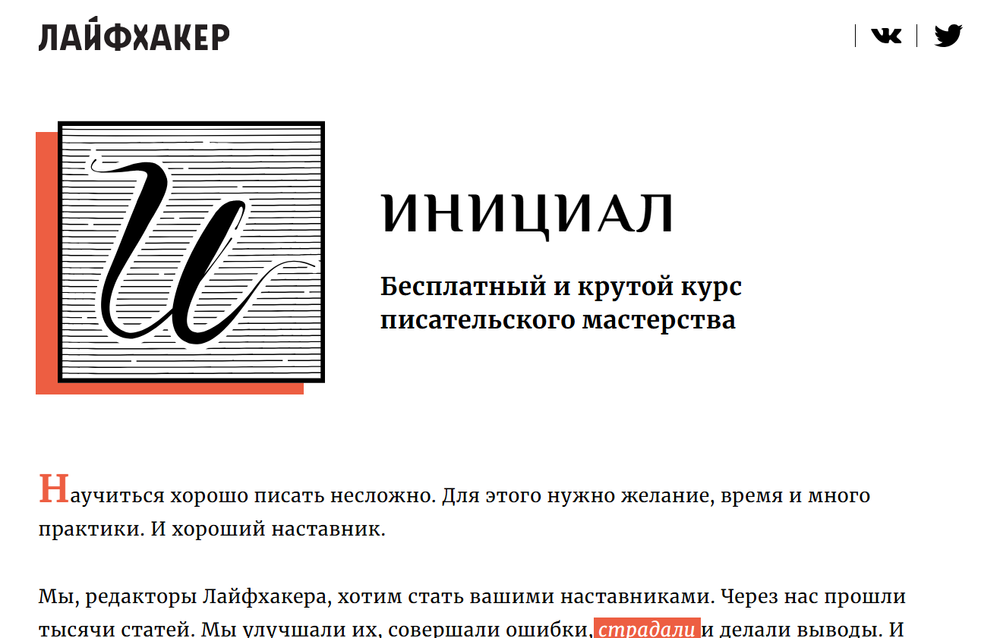
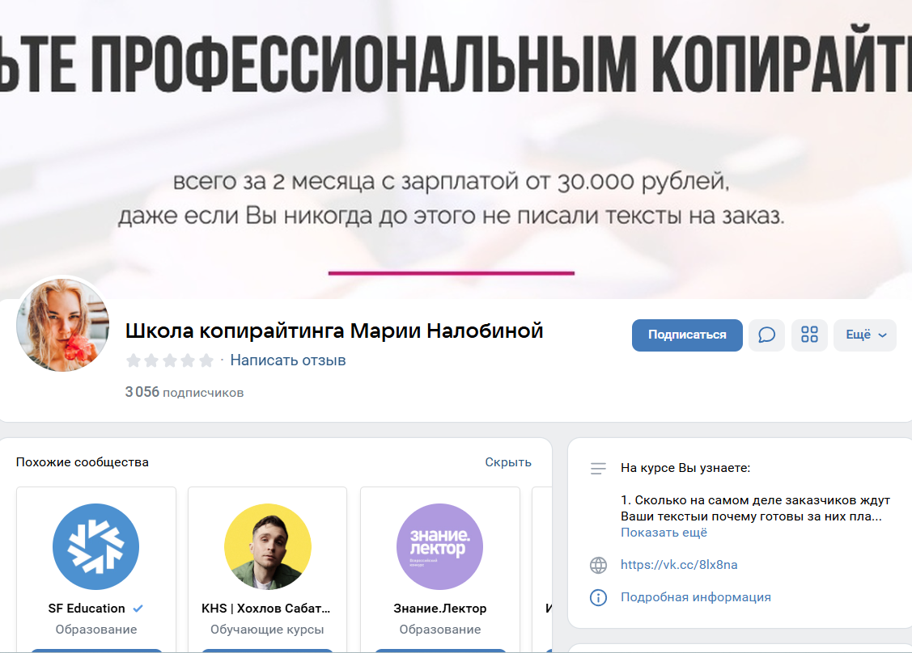
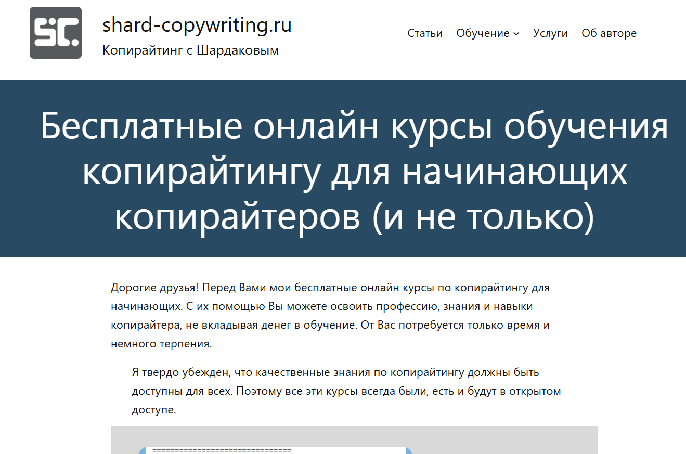

№1 Копирайтинг от А до Я — Skillbox

Сайт: https://skillbox.ru/course/copywriter/
Стоимость курса: 2 457 рублей ежемесячно (при оплате за год)
Общая сумма: 29 484 рубля.
Вы получите диплом, подтверждающий успешное завершение курса, который окажет положительное влияние на вашу карьеру.
В ходе обучения вы овладеете методами написания эффективных текстов, адаптированных под различные группы целевой аудитории, и научитесь привлекать внимание своих читателей. Эти навыки помогут вам утвердиться в качестве специалиста и повысить уровень дохода.
- Чек-листы и примеры для создания удачных текстов
- Портфолио, состоящее из пяти завершенных работ
- Практические задания на основе реальных брифов
- Бессрочный доступ ко всем учебным ресурсам
Для кого будет полезен этот курс
Для начинающих писателей
Вы получите базовые знания в области копирайтинга, изучите приемы создания убедительных текстов, поиска информации, организации контента и написания захватывающих материалов.
Для специалистов в контент-маркетинге и SMM
Вы освоите написание продающих текстов для социальных медиаплатформ, email-рассылок, целевых страниц и других рекламных инструментов, что поможет привлечь больше клиентов и повысить их интерес.
Для студентов и выпускников гуманитарных факультетов
Вы получите практические навыки в создании коммерческих текстов и решении реальных бизнес-проблем.
Для тех, кто хочет зарабатывать на текстах
Вы станете копирайтером. Вам покажут, как создавать качественные тексты в разных форматах, находить интересные заказы, предлагать свои услуги и получать доход.
Что вы освоите
Создание качественных текстов
Вы научитесь работать в различных жанрах и стилях, добавляя в тексты наглядные примеры.
Анализ брифов
Вы разовьете навыки быстрого анализа заданий и эффективного общения с клиентами.
Адаптация текстов под целевую аудиторию
Вы сможете выявлять интересы читателей и разрабатывать контент, который будет полезным и актуальным для них.
Редактирование
Вы поймете, как упростить текст и избавиться от лишнего, а также ознакомитесь с приемами, улучшающими читаемость.
Презентация поступков
Вы научитесь правильно воспринимать критику и обсуждения, а также находить общий язык с клиентами.
Формирование портфолио
Вы узнаете, как выбрать наиболее удачные работы для своего портфолио, обосновывать свою стоимость и успешно представлять себя потенциальным заказчикам.
Структура курса
Вас ждет увлекательный процесс обучения с вебинарами и практическими заданиями на основе реальных кейсов.
- 8 тематических модулей
- 41 онлайн-урок
- Основы профессии
- Типы текстов — статьи
- Типы текстов — карточки
- Типы текстов — email-рассылки
- Другие форматы текстов
- Что делает текст убедительным
- Методы работы с клиентами и организация рабочего процесса
- Личный брендинг
- Итоговый проект: создание текстового контента по брифу клиента
Преподаватели курса
Сергей Король
Контент-директор в компании Яндекс
Людмила Сарычева
Руководитель редакции «Гладлакс», редактор и автор книг о текстах
Полина Накрайникова
Редактор по развитию в проекте «Горящая изба»
№2 Факультет редактуры и копирайтинга в Geekbrains

Рекомендуем посетить наш веб-сайт: https://gb.ru/geek_university/copywriter
Вы можете получить диплом о профессиональной переподготовке
У нас есть государственная лицензия на предоставление образовательных услуг
Цена составляет: от 2 907 рублей в месяц, доступна рассрочка на срок до 36 месяцев
ФОРМАТЫ ОБУЧЕНИЯ:
Занятия в группах под руководством опытных преподавателей
Вебинары и лекции в режиме онлайн
Видеоуроки для самостоятельного изучения
ДЛИТЕЛЬНОСТЬ — 12 месяцев (два занятия в неделю)
РЕЗУЛЬТАТ — Диплом
Четыре проекта для портфолио
ГАРАНТИЯ — Трудоустройство по завершению курса
Кому будет интересен этот курс
Копирайтерам
Вы овладеете искусством написания текстов, которые четко продемонстрируют, как ваш продукт помогает решить проблемы пользователей. Научитесь простому и доступному освещению информации.
Тем, кто хочет изменить профессию
Станьте экспертом в выбранной области, изучите, как создавать информационный контент, и сформируйте портфолио для старта карьеры.
SMM-менеджерам и специалистам по email-маркетингу
Расширьте свои знания, научитесь редактировать тексты, повышайте конверсии и увеличивайте свою продуктивность.
Учебная программа
1
Подготовительный модуль: выбор направления
Создание текстовых материалов
Обработка информации
Редактирование текстов
Введение в профессию
2
Юридические аспекты
Контент для сети интернет
Этика медиа и правовые нюансы
Основы авторского права
Защита прав: редакторы и граждане
Риски, связанные с контентом: опасные темы
Юридические аспекты редактирования в разных СМИ
3
Стратегическое планирование контента
Основы верстки и оформления
Создание цифровых проектов
Аналитика данных
Разработка контент-стратегий
Что представляет собой контент-стратегия
Каналы распространения контента
Редакционная политика
Реализация идей в жизнь
4
Работа в команде
Взаимодействие с клиентами
Личный опыт работы на фрилансе
Командные взаимодействия
Роли в команде
Распределение задач в коллективе
Инструменты проектного управления
Поиск подрядчиков
Процесс набора команды
Контроль выполнения задач: оценка, обратная связь, оплата, документация, рекомендации
Бюджетирование
Наши эксперты
Павел Федоров — Продакшн-директор КБ «Палиндром»
Создатель Telegram-канала «Паша и его прокрастинация», автор подкастов «Поредачим» и «Что-то горит». Участвовал в уникальных проектах для «Лайфхакера», занимался маркетингом в «ВКонтакте», управлял контентом на Profi.ru и редактировал материалы для «Нетологии».
Татьяна Симакова — Главный редактор сайта The Village
Основательница медийного ресурса «Большая деревня», написала авторские колонки для таких изданий как Wonderzine, Colta.ru, OpenSpace и «Афиша Daily».
Вы сможете развивать навыки написания текстов для разнообразных целей и аудитории. Создавайте увлекательные рекламные материалы, которые невозможно не заметить.
№3 Коммерческий редактор/копирайтер — Нетология

Сайт: https://netology.ru/programs/kontent-menedjer-edpro#/presentation
Формат обучения: вебинары, видеокурсы, тесты, практические задания и финальная аттестация.
Задача контент-менеджера заключается в том, чтобы использовать текст как главный инструмент для достижения целей бизнеса. Ключевые обязанности включают выбор форматов, управление командой, разрабатывание контентной стратегии и анализ итогов работы.
Работа коммерческого редактора требует не только исправления ошибок, но и глубокого понимания целей работы, а также наличия управленческих навыков.
Кому будет полезен этот курс
Журналистам, копирайтерам и начинающим редакторам
Овладев digital-форматами, вы сможете работать с корпоративным контентом и расширите свои профессиональные горизонты.
Маркетологам, PR-менеджерам и SMM-специалистам
Научитесь разрабатывать контент, который способствует продвижению брендов, и эффективно работать с редакционной командой.
Тем, кто хочет сменить профессию
Вы изучите разные форматы контента, научитесь разрабатывать стратегии и координировать работу команды редакторов.
Что вы освоите
Создание текстов, направленных на решение бизнес-задач
Вы научитесь писать статьи для корпоративных блогов, контент для соцсетей и рассылок.
Верстка материалов и лендингов
Овладеете навыками работы с платформами, такими как Tilda, Readymag, Setka и WordPress для формирования обширной информации.
Использование истории
Постановка правильных иллюстраций с акцентом на эстетику текста.
Управление редакционными процессами
Организация мероприятий, установка редакционных стандартов и ключевых показателей.
Контроль распространения контента
Выбор каналов для продвижения, определение бюджета и создание медиаплана.
Анализ данных
Применение веб-аналитики для оценки качества контента и его маркетинговой эффективности.
Итоговая работа
Разработка контентной стратегии или бизнес-плана на основе реальной задачи; в случае отсутствия идеи вы получите альтернативное задание.
Образовательные возможности
Коммерческий редактор — с самого старта:
Для новичков.
8,5 месяцев.
330 часов.
52 лекции по 1,5 часа.
27 заданий с проверкой.
Курс охватывает:
Работа с текстами.
Упаковка контента.
Специализация: основы контент-маркетинга.
Вы получите навыки написания материалов для соцсетей, создания лендингов, ведения корпоративных блогов и написания email-рассылок. Углубите знания о том, как работать с Readymag и основам верстки.
Рассрочка: 3 785 р / месяц на 18 месяцев. Общая стоимость: 68 140 р.
Коммерческий редактор PRO
Для специалистов с опытом, нацеленных на редактуру.
7 месяцев.
309 или 262 часа, в зависимости от специализации.
42 или 48 лекций по 1,5 часа.
18 или 12 домашних заданий с проверкой.
Программа включает:
Упаковка контента.
Сторителлинг.
Выбор специализации: основы контент-маркетинга или создание отдельных проектов.
Вы изучите разнообразные форматы контента и освоите навыки их анализа. Познакомитесь с платформами, такими как Tilda, Readymag, Setka и WordPress. Узнаете о том, как работать в команде и различные методы монетизации ваших проектов.
Рассрочка: 3 326 р / месяц на 18 месяцев. Итоговая стоимость: 59 880 р.
Образовательная программа
Основной курс
Создание текстов для маркетинга
Редактирование и упаковка материалов
Сторителлинг
Полный пакет «Коммерческий редактор PRO»
Направления
Контент-стратег
Разработка специализированных проектов
Коммерческий автор от TexTerra

Сайт: https://teachline.ru/courses/commercial-author/
Стоимость: 12000-26000 р.
Продолжительность: 14 видеоуроков по 1,5 часа
По окончании вы получите диплом и рекомендательное письмо, которые помогут в поисках клиентов.
Этот курс поможет вам:
Быстро адаптироваться к новым профессиональным условиям, находить заказы и зарабатывать онлайн из любого уголка мира. Увеличить стоимость своих услуг, развиваясь от начинающего копирайтера до специалиста в среднем и высоком сегментах. Научиться составлять тексты для бизнеса, даже если у вас нет опыта в написании рекламных материалов, анонсов или кейсов — курс предоставит все необходимые знания.
Что вас ждет?
14 видеоуроков по 1,5 часа, обратная связь по выполненным заданиям и возможность задать вопросы преподавателю. Вы научитесь создавать разнообразный контент — от статей до лендингов. Овладеете основами SEO и интернет-маркетинга. Приобретете навыки профессионального редактирования и корректуры. Узнаете о разных инструментах для поиска клиентов, включая менее известные. Получите доступ к дополнительным материалам и записям лекций в течение года.
Содержание курса
Основы копирайтинга: изучение задач и особенностей работы специалиста по контенту. Определение ролей и возможностей для карьеры копирайтера. Обсуждение этических норм профессии.
Разнообразие текстового контента и нюансы его создания. Что представляет собой актуальный и полезный текст. Классификация типов контента и их создание. Тексты для посадочных страниц: структура и содержание, включая блоки и формы обратной связи. Описание, как текст на лендинге становится важной частью.
Форматы контента, интеграция нестандартных элементов, таких как инфографика, видео, тесты и white paper. Понимание принципов newsjacking и их преимуществ. Определение популярных форм контента и критерии их привлекательности. Ключевые аспекты для B2C и B2B контента.
Исследование: отбор тем, оптимизация контента, сбор информации и проверка фактов. Написание углубленных статей на темы, в которых вы не являетесь экспертом.
Структура и оформление текстов. Различие в восприятии печатного и цифрового контента. Влияние структуры на восприятие. Основы HTML для коммерческих авторов. Оформление публикаций.
Примеры успешного и неудачного оформления. Стиль. Как базовые стилистические навыки помогают создавать привлекательные материалы. Восприятие текста аудиторией в разных стилях.
Журналистика в контексте коммерческого письма. Сравнение между коммерческим автором и журналистом. Оценка компетенций журналиста. Форматы контента в журналистике. Применение креативного письма.
Упражнения для развития писательских навыков: утренние страницы, фрирайтинг и другие методики. Контент для соцсетей: посты и объявления.
Общая концепция контента в соцсетях: цели и их реализация. Как разработать рубрикатор и контент-план. Форматы контента для различных платформ.
Редактирование и корректировка. Правила вычитки и редактирования без искажения текста. Основные правила редактирования и важные аспекты, которые следует учитывать.
Основы SEO: как привлекать трафик через поисковые системы. Нужна ли оптимизация текстового контента.
Поиск клиентов и реализация услуг. Как эффективно представить себя и развивать личный бренд. Создание портфолио и коммерческого предложения. Анализ ошибок, ответы на вопросы и рекомендации для успешного завершения программы.
Копирайтер для экспертов и онлайн-школ — Ольга Придейная

Сайт: https://prideina-course.ru/
Стоимость:
Самостоятельный — 22500 р
Базовый — 29500 р
“Хочу максимум!” — 45500 р
Кому пригодится курс
Для тех, кто:
мечтает стать копирайтером и стремится к удаленной работе,
любит писать и хочет сделать хобби своей карьерой,
желающим находить работу даже в сложных условиях,
уже работает с текстами для Instagram и хочет расширить свои навыки,
намерен получать как теоретические, так и практические знания,
планирует учиться создавать высокооплачиваемые тексты.
Курс будет особенно полезен
Увлечённым копирайтерам
Вы сможете писать тексты для различных форматов, таких как лендинги, email-рассылки и Instagram-посты, включая экспертные и коммерческие сообщения. По окончанию курса вы сможете создать своё портфолио и начать карьеру в этой области.
Опытным копирайтерам
Вы повысите качество создаваемого контента, сотрудничая с профессионалами, улучшите свои маркетинговые навыки и «упакуете» себя для повышения стоимости своих услуг. Также узнаете важные аспекты инфобизнеса и принципы работы в онлайн-школах.
SMM-менеджерам, контент-менеджерам и администраторам Instagram
Вы научитесь формулировать убедительные тексты, которые привлекают внимание читателей с первых строк. У вас появится умение выделять преимущества продуктов и услуг в своих сообщениях, что поможет привлечь новую целевую аудиторию. Написанные вами статьи помогут вам стать универсальным экспертом, что, в свою очередь, позволит рассчитывать на более высокую оплату труда.
Обзор курса
Месяц активного изучения текстов.
Занятия будут осуществляться в онлайн-формате на платформе Getcourse.
Каждую неделю вы примете участие в живых вебинарах, где сможете освоить новые темы. Всего пройдет 4 вебинара, в процессе которых вы сможете задать интересующие вас вопросы и проанализировать распространенные ошибки. Если вы не сможете присутствовать на вебинаре, то записи будут доступны для просмотра позже.
Каждый модуль включает видеоуроки и дополнительные материалы, такие как руководства и чек-листы.
Дважды в неделю вам предстоит выполнять заданные домашние работы в удобное для вас время.
Вы получите подробную индивидуальную обратную связь в виде аудиозаписей с акцентом на специфические аспекты ваших работ.
Кроме того, будет создан групповой чат для общения, получения поддержки и оперативного решения вопросов.
В чате вы сможете общаться как с автором курса, так и с другими участниками.
На пятой неделе курса предоставляется возможность пройти стажировку на реальных проектах (для тарифов «Базовый» и «Хочу максимум»), что позволит вам взаимодействовать с клиентами в процессе обучения.
После завершения курса вы получите доступ к вакансиям через Telegram, что упростит поиск работы.
Темы, рассматриваемые в курсе
[спойлер]
Первая неделя
1-й модуль: Эффективное написание коммерческих текстов. Основные принципы продаж через текст.
Способность выражать мысли ясно и убедительно.
Структура текста.
Работающие модели для увеличения продаж.
Привлечение внимания читателя с помощью заманивающего начала.
Психология потребителя: как представить продукт или услугу с акцентом на пользу для клиента.
Призывы к действию: методы и формулы.
Как победить страх перед написанием коммерческих текстов.
Вторая неделя
2-й модуль: Написание текстов для лендингов.
Этапы создания лендинга для бесплатного вебинара: шаги и основные элементы.
Создание привлекательных заголовков и подзаголовков.
Использование триггеров для увеличения интереса.
Составляющие текста лендинга.
Создание лендингов — одна из наиболее востребованных ниш в копирайтинге.
3-й модуль: Тексты для email-рассылок.
Основные принципы подготовки email-рассылок.
Как привлечь внимание читателя на этапе формирования email-рассылки для целевой аудитории.
Виды рассылок.
Структура письма для вебинара: что писать и в каком порядке.
Обязанности копирайтера.
Методы анализа успешности рассылки и способы ее эффективности.
Как избежать попадания в папку «Спам».
Третья неделя
4-й модуль: Создание экспертного контента для Instagram.
Установление доверительных связей с подписчиками.
Ключевые принципы написания экспертных текстов.
Адаптация стиля к индивидуальности эксперта и развитие коммуникации.
Создание контентной воронки и методы вовлечения читателей в постах и историях.
Планирование контента и стратегии для формирования воронки.
Типы контента и цели их использования в Instagram.
5-й модуль: Как привлечь максимальное количество участников на вебинар через Instagram эксперта.
Организация блога эксперта: методы повышения посещаемости вебинара.
Классические и нестандартные форматы анонсирующих публикаций.
Сторителлинг: Искусство написания историй
Как привлечь внимание аудитории
Неделя 4
Модуль 6: Лид-магниты.
Что такое лид-магниты
Лид-магниты — это инструменты, которые способствуют привлечению потенциальных клиентов. Они помогают копирайтерам активно привлекать внимание и извлекать из этого выгоду.
Типы лид-магнитов и их функции
Существуют различные виды лид-магнитов, каждый из которых выполняет уникальную задачу и предназначен для определенных целей.
Основные принципы создания лид-магнитов
Существуют определенные рекомендации, которые помогут вам разработать эффективные лид-магниты.
Дополнительные занятия:
- Урок от психолога на тему «Как преодолеть страхи начинающего копирайтера».
- Урок «Создание текстов для лендингов платного продукта».
- Урок «Управление проектами в копирайтинге: оптимизация процессов».
- Урок «Планирование и управление задачами».
- Урок «Позиционирование контента для обучающих программ».
- Урок «Проектирование прототипа лендинга».
- Урок «Работа с Яндекс.Дзен».
- Урок «Создание материалов для таргетированной рекламы».
Стажировка
Доступные тарифы: «Базовый» и «Хочу максимум».
Неделя 5
Стажировка (для тарифов «Базовый» и «Хочу максимум»).
Автор курса
Ольга Придеина
Копирайтер, филолог и разработчик образовательных программ в области копирайтинга.
- Имеет 5 лет практического опыта в копирайтинге.
- Создала более 4500 коммерческих текстов для различных клиентов.
- Свыше 600 дипломированных выпускников школы копирайтинга, из которых многие работают с известными блогерами.
Курс по копирайтингу
Копирайтинг стал важным навыком для современных специалистов, способным служить как дополнительным, так и основным источником дохода. Школа юного копирайтера предлагает полный набор знаний и навыков, необходимых для создания успешных коммерческих текстов. Курс охватывает основы копирайтинга, особенности написания текстов для различных стилей и целей, а также организационные моменты и методы редактирования. Участники выполняют практическое задание, способствующее развитию креативного подхода и улучшению качества их работ.
Курс включает восемь онлайн-занятий с домашними заданиями. Практика является основой успеха, так что будьте готовы усердно работать. После каждой лекции участники получают задания и обратную связь от преподавателя, а также возможность обсуждать тексты своих сокурсников.
Занятия проводятся по будним дням с 10:00 до 12:00, дважды в неделю.
Курс от Ирины Голдман

Сайт: https://spacecool.ru/copywriting
Цена: 8 888 РУБЛЕЙ
Интенсивный курс по копирайтингу, проводимый опытным редактором журнала Cosmo и популярным блогером Ириной Голдман.
Продолжительность курса — 4 недели.
7 уникальных уроков продолжительностью от 1,5 до 2,5 часов: 6 предварительно записанных и 1 — в режиме онлайн.
6 домашних заданий с индивидуальной оценкой и отслеживанием прогресса.
Курс по техническому писательству

Сайт: https://protext.su/pro/kurs/
Продолжительность курса: 72 часа.
Цена: 19800 руб. для физических лиц и 24900 руб. для юридических лиц.
Цели курса
Повышение профессиональных навыков в создании технической документации и аналитических материалов в области IT. Онлайн-формат обучения дает вам возможность самостоятельно выбирать сроки начала и время занятий.
Что вы получите по завершении курса?
- Если вы только начинаете, курс поможет глубже понять профессию технического писателя и подготовить первые материалы для портфолио.
- Вы обретете уверенность и получите массу новой информации и опыта.
- По окончании курса вам предоставят сертификат от профильной компании, который будет полезен при стартe вашей новой карьеры.
- Если у вас уже есть опыт в техническом писательстве, этот курс поможет выявить слабые места и улучшить существующие навыки.
- Обсуждение профессиональных трудностей и получение новых знаний раскроет для вас новые карьерные перспективы.
Учебный план курса
[спойлер]
- Вводный модуль о профессии.
- Пути становления в профессии технического писателя.
- Юридические аспекты и области деятельности.
- Типы материалов и их целевая аудитория.
- Стандарты оформления документации и статей.
- Стиль написания технических материалов.
- Основы оформления документации.
- Методология подготовки документов для программного обеспечения.
- Создание аналитических материалов.
- Разработка видеодокументации.
- Создание презентаций.
- Описание программного кода и схем.
- Составление технических заданий и маркетинговых текстов.
- Работа с документацией для перевода.
- Технические переводы и их оформление.
- Выбор программного обеспечения для работы.
- Особенности работы технического редактора.
- Документирование в соответствии с установленными стандартами.
- Итоговое практическое задание.
[/спойлер]
Курс продвинутого копирайтинга
Сайт: https://copywriterinfo.ru/
Курс требует оплаты.
Ожидаемые результаты для участников курса
[спойлер]
- Регулярные занятия по написанию: создавайте новые тексты и улучшайте их, это основа вашего обучения.
- 49 видеоуроков, доступных для изучения в любое время с возможностью возвращения к ним по мере необходимости.
[/спойлер]
- Личный кабинет, который можно открывать как на стационарном компьютере, так и на планшете, устроен так, чтобы обеспечить вам максимальный комфорт в использовании.
- По завершении каждого модуля вас ожидает выполнение упражнений, которые помогут улучшить ваши навыки в копирайтинге.
- На все ваши вопросы будут даны ответы в комментариях с обязательным сроком обработки в 24 часа.
- Учебные материалы построены на реальных примерах, что способствует их лучшему усвоению.
- Вы получите неограниченный доступ к образовательным ресурсам курса, которые можно изучать в любое удобное время.
- Есть возможность сформировать профессиональное портфолио, в которое войдут рекламные тексты, написанные вами в ходе обучения.
- Каждую неделю проходят вебинары, на которых вы сможете получить фидбек по своим работам и задать вопросы.
- Формат занятий очень гибкий: вы можете самостоятельно изучать материалы и получать помощь даже после окончания курса.
Вы можете войти в нашу группу в любое время, даже если другие студенты уже завершили обучение. Не переживайте, если у вас нет возможности следовать общему графику — вы сможете учиться в режиме, удобном именно для вас. Каждое воскресенье проводятся вебинары, на которых я предоставляю обратную связь по всем текстам участников. Если по каким-либо причинам вы не сможете присутствовать на вебинаре из-за отпуска или болезни, не беспокойтесь — вы сможете участвовать позже или просмотреть запись занятия.
Авторский Курс — Надежда Сокирская

Сайт: https://sokirskaya.ru/ Длительность: 6 недель Стоимость: Базовый курс — 35000 руб Больше практики — 46000 руб Максимум практики — 85000 руб
Кому сможет пригодиться этот курс?
Этот курс предназначен для тех, кто намерен начать писать тексты на заказ, но не обладает предварительным опытом. Ваше образование и предыдущий опыт работы не имеют значения. Если вы готовы обучаться и работать, то за 6 недель вы овладеете необходимыми навыками, начнете взаимодействовать с реальными клиентами и сформируете свое портфолио. Данный курс также будет полезен тем, кто уже занимается текстами и хочет увеличить свои доходы. Вы сможете провести анализ своих сильных и слабых сторон, устранить ошибки, получить новые знания и повысить уверенность в себе. Вы научитесь создавать контент, который способствует продажам и привлекает внимание владельцев бизнеса и блогеров.
Как организован курс?
— Шесть насыщенных недель, с новыми уроками каждый рабочий день;
— 12 практических заданий;
— Групповая работа, состоящая из 10-12 человек под руководством наставника;
— Проверка всех заданий с детальной обратной связью от куратора;
— Работа над реальными проектами с отзывами от клиентов;
— Формирование актуального портфолио на платформе Tilda в процессе обучения;
— Поддерживающий Telegram-канал с коучем;
— Система накопления баллов и призов.
Что будет включено в курс?
— Введение с подробными инструкциями, доступное сразу после оплаты;
— Поиск работы — стартует со второго модуля;
— Основные навыки копирайтера;
— Создание текстов, повышающих продажи — практика с клиентами;
— Разработка контента для социальных сетей — работа с заказчиками;
— Формирование портфолио. Финальные занятия;
— Дополнительные тренажеры для развития навыков общения с клиентами.
О курсе и его авторе
Надя Сокирская
Журналист, редактор и блогер с высшим образованием по специальности авторское мастерство, полученным в Литературном институте. Обладает более чем десятью годами опыта в СМИ — от работы редактором на радиостанциях, таких как «Русская служба новостей» и «Говорит Москва», до должности ответственного редактора на сайте «Комсомольская правда». В 2014-2017 годах занимала пост главного редактора на Леди.Mail.Ru. Преподавала интернет-журналистику на факультете журналистики МГУ, организовывала стажировки и сотрудничала с авторами. Запустила блог, который за 10 месяцев собрал свыше 100 тысяч подписчиков. Ведет занятия в школе телевидения «Останкино ТВ».
Кураторы курса
Наталья Семенова
Шеф-редактор PR-отдела Правительства Москвы, ранее работала редактором на aif.ru и шеф-редактором на сайте телеканала Минобороны РФ «Звезда».
Алена Костомарова
Шеф-редактор и заместитель руководителя отдела специальных проектов в МИА «Россия сегодня». Помогает в развитии имиджа брендов и решении бизнес-задач. Ранее сотрудничала с Geo, РБК Lifestyle, Snob и другими изданиями. Имеет 14-летний опыт работы с текстами.
Конструктор продающего текста от Школы копирайтинга Дениса Каплунова
Сайт: https://deniskaplunov.com/kpt/ Стоимость: Стандартный курс: 18 525 руб Премиум курс: 37 275 руб
В течение полутора месяцев, опираясь на более чем 70 примерах, вы изучите 100 наиболее эффективных методик копирайтинга, которые помогут увеличить конверсию ваших текстов как минимум в три раза.
Кому будет полезен этот курс?
Предпринимателям и владельцам бизнеса
Вы научитесь создавать эффективные тексты, способные привлечь на 3-5 раз больше клиентов и увеличить ваши доходы.
Копирайтерам (независимым и штатным)
У вас появится шанс улучшить свои навыки, освоить новые техники и увеличить свою продуктивность, что позволит вам зарабатывать на 3-5 раз больше.
Экспертам и консультантам
Вы научитесь писать тексты, которые помогут продвигать ваши услуги, увеличивая среднюю сумму сделки и значительно повышая доход.
Маркетологам и менеджерам по продажам
Вы улучшите свои навыки, что даст вам конкурентные преимущества и существенно повысит результаты вашей работы.
Что включает курс?
— Полтора месяца обучения;
— Более 100 методов копирайтинга;
— Проверка домашних заданий;
— Более 70 примеров готовых текстов;
— Гибкий график обучения;
— 18 видеоуроков;
— Конспекты всех лекций;
— Дополнительные ресурсы.
Содержание курса
«Заголовки»
#1
— Основные функции заголовка;
— Три ключевые роли заголовка;
— Использование «надзаголовка» для привлечения внимания читателя;
— Примеры успешных надзаголовков из рекламных текстов;
— 20 формул создания заголовков;
— Как и когда использовать подзаголовок: три ключевые функции;
— 20 примеров комбинаций «Заголовок + Подзаголовок».
В результате: вы сможете создавать запоминающиеся заголовки, привлекающие внимание целевой аудитории.
«Вводная часть»
#2
— Причины, по которым 80% текстов теряют интерес читателя;
— Проверенная формула вовлечения;
— Пять ключевых составляющих успешной вводной части текста;
— Что такое «мини-заголовки» и их значимость;
— 7 стратегий для создания мини-заголовков и 34 примера;
— 10 классических техник для рекламных вводных текстов;
— 10 креативных методов написания вводной части.
В результате: вы научитесь правильно начинать рекламный текст, вызывать доверие читателя и пробуждать интерес к вашему продукту или услуге.
«Представление и описание»
#3
— Эффективность концепции «Тройной выгоды»;
— 7 способов подчеркнуть новизну привычного продукта;
— Двухуровневая формула представления товара;
— Уникальное торговое предложение в 10-20 словах;
— 5 примеров краткого и развернутого представления;
— 14 методов описания товара или услуги;
— Теглайн как усиляющий текст + 7 вдохновляющих примеров.
В итоге: вы научитесь формулировать уникальные торговые предложения, подчеркивающие преимущества ваших продуктов или услуг в условиях высокой конкурентной среды.
«Доказательства»
#4
— Зачем тексту нужны доказательства;
— Использование SOCIAL PROOF: его значение;
— Формулы для создания успешных отзывов (с примерами);
— Написание кейсов и вдохновляющих историй;
— Какую силу имеют цифры;
— Способы подтверждения вашей компетентности;
— 16 разновидностей нестандартных доказательств и примеры.
В результате: вы освоите навыки формирования убедительных аргументов, чтобы преодолевать сомнения клиента.
«Ценовое предложение»
#5
— Что значит «продажа цены» и ее важность;
— Как писать при изменчивых ценах;
— Как убедить, когда цены у многих одинаковы;
— 5 хитростей работы с тарифами и пакетами;
— 4 типа и 9 примеров гарантий в продающих текстах;
— Почему гарантия — это не только возврат денег;
— 15 техник аргументации ценообразования.
В результате: вы сможете корректно формулировать ценовые предложения так, чтобы клиент осознал преимущества сотрудничества.
«Заключительная часть продающего текста»
#6
— «Ловушки классного текста» — что может снизить конверсии;
— Как правильно завершать продающий текст;
— Универсальная формула призыва к действию;
— «Действие с минимальным сопротивлением» — как улучшить конверсии;
— Зачем в продающем тексте требуется специальное предложение;
— Три типа и 22 примера специальных предложений;
— 15 успешных примеров завершений продающих текстов.
В итоге вы освоите, как правильно завершить продающий текст, что поможет вам превратить читателя в клиента, готового к взаимодействию сразу после прочтения.
Как организован процесс обучения?
Старт
Вы получаете доступ к онлайн-платформе с учебными материалами.
Уроки
Вы изучаете видеолекции каждого модуля поэтапно (теоретическая и практическая части).
Практика
Вы выполняете задания и отправляете их на проверку.
Проверка
Наставник анализирует ваши работы и предоставляет рекомендации по их улучшению.
Консультирование
Вы имеете возможность получить дополнительные консультации от Дениса Каплунова, если выберете пакет «Премиум».
Кто создал курс?
Денис Каплунов
Авторитетная фигура в области копирайтинга, контент-маркетинга и продвижения товаров. Он завоевал отличную репутацию благодаря высокому уровню профессионализма в создании текстов. Его опыт в производстве коммерческого контента охватывает более 12 лет. Денис реализовал более 4000 успешных проектов для более чем 700 клиентов и обладает знаниями в свыше 100 разных областях. Он является основателем компании «Студия Дениса Каплунова».
Что включает курс
Бонус 1 — Краткий курс «Копирайтинг в XXI веке»
Бонус 2 — Набор из 10 чек-листов
Бонус 3 — Мастер-класс «Максимальные продажи»
Бонус 4 — Мастер-класс «Клиенты из социальных сетей»
Бонус 5 — Мастер-класс «15 практических упражнений по копирайтингу»
Бонус 6 — Мастер-класс «Эффективное коммерческое предложение»
Бонус 7 — Мастер-класс «Успешное взаимодействие с клиентами»
Основной курс «Базовый курс Главреда» от Максима Ильяхова

Этот курс претерпел множество обновлений за последние шесть лет: появились новые темы и пересмотрены устаревшие материалы. В конце 2019 года была запущена видео-версия курса, в которой основные моменты создания качественного текста представлены в 13 видеоуроках. Мы обновили старые учебные материалы и добавили свежую информацию о:
- Работе с Главредом
- Анализе информационного стиля
- Опасных словах
- Структурных вводных фразах
- Оценочных словах и усилителях
- Штампах в тексте
- Абстракциях
- Структуре текста
- Канцелярских выражениях
- Кинематографических приемах
- Уточняющих фразах
- Однородных членах предложения
- Прозрачности текста
- Коммуникации
- Практическом применении текста
- Контекстуальных аспектах
- Будущих шагах в обучении
Углубленный 2-месячный курс ИНТЕРНЕТ-ПРОФЕССИЯ КОПИРАЙТЕР 2.0 от Натальи Реген
Сайт: https://infovoronka.ru/ipk2-0-price-special
Цена:
Базовый пакет — 13990 рублей
Стандартный пакет — 20990 рублей
Премиум пакет — 40990 рублей
Структура курса
Модуль 0
Подготовительный этап
На первом этапе обучения мы ознакомим вас с общей структурой курса и обучением. Будут освещены ключевые концепции маркетинга, необходимые для успешной карьеры копирайтера. Вы узнаете о профессии и формуле «Т», к которой сможете обращаться в практической деятельности. Также получите советы по поиску вашего первого заказчика для стажировки, что станет вашим первобытным шагом на этом пути.
Модуль 1
Тексты и статьи для веб-сайтов
Вы изучите разнообразные виды и форматы текстов. Ознакомитесь с примерами статей различных стилей и выполните практические задания, создавая свои собственные тексты для портфолио. Научитесь писать тексты для главной страницы, секций услуг и раздела «О компании», и освоите реальные навыки создания текстовой структуры.
Модуль 2
Продающие тексты
Вы познакомитесь с различными форматами текстов, предназначенных для продаж. Получите практическое руководство с образцами и структурами, чтобы оптимизировать время, затрачиваемое на выполнение заданий. Тщательно изучите важнейшие формулы, нужные клиентам, и выполнив задание подготовьте продающий текст для вашего портфолио.
Модуль 3
Социальные сети
Научитесь писать истории, разрабатывать контент-планы для клиентов и создавать тексты для соцсетей. Ознакомитесь со всеми этапами контентного цикла и вовлечением аудитории, а также как писать рекламные и продающие посты.
Модуль 4
Рассылки, чат-боты и автоворонки
Изучите методы написания писем с практическими примерами и шаблонами. Освойте технологии для разработки пяти разных типов писем. Научитесь использовать инструменты автоворонок и чат-ботов с ценами, начиная от 15000 рублей.
Модуль 5
Упаковка и самопрезентация
Научитесь составлять бриф с деталями сотрудничества с клиентом. Узнайте, как оформить портфолио и представить свои проекты. Ознакомьтесь с методами создания профессионального сайта, группы или страницы для продвижения личного бренда.
Модуль 6
Поиск клиентов и получение заказов
Изучите, где можно найти платёжеспособных клиентов. Овладейте тремя проверенными стратегиями для установления долгосрочных отношений с клиентами. Научитесь вести переговоры и уверенно отвечать на возражения. В этом модуле мы предоставим лучшие платформы для поиска клиентов и готовые образцы обращений к заказчикам для увеличения ваших шансов на успех.
Модуль 7
Выбор специализации для увеличения дохода
Определите, какая специализация вам больше подходит. Исследуйте основы различных направлений копирайтинга, включая автоворонки, услуги, контент-маркетинг, онлайн-магазины и онлайн-обучение.
Модуль 8
Комплексные предложения для клиентов
Узнайте, как предлагать клиентам повторные услуги для увеличения доходов от одного проекта. Получите пошаговую инструкцию по составлению комплексного предложения. Создайте систему для получения заказов на сумму более 10000 рублей за проект.
Финал
Сдача экзамена для получения сертификата.
План вашего личностного и профессионального развития: как двигаться вперёд в своей карьере.
Индивидуальный план для увеличения доходов.
Формат обучения
Занятия проводятся на образовательной платформе.
Регулярные обновления.
Вебинары с ответами на ваши вопросы.
Поддержка куратора.
Удалённая профессия Копирайтер — Артур Грант и Вероника Головченко / Profi Internet
Сайт: https://copywriting.artur-grant.ru/
Продолжительность: 2 недели
Формат: онлайн
Цена: бесплатно
Что вы получите?
Пройдите двухнедельный курс по копирайтингу абсолютно бесплатно. Начните зарабатывать удаленно, создавая тексты на заказ.
Авторы курса
Артур Грант – соавтор курса и основатель школы Profi-Internet. Копирайтер с семилетним опытом, который за первый год работы значительно увеличил свои расценки (с 2-3 долларов за текст до 200-400 долларов). Тексты, написанные Артуром, принесли более 28 миллионов рублей за последние три года.
Вероника Головченко – опытный тренер с более чем семилетним стажем в копирайтинге, подготовившая свыше 1000 учеников на курсах и в индивидуальном коучинге.
Специалист по копирайтингу
Сайт: https://copy2.0.profiinet.ru/
Продолжительность: трехмесячный онлайн-курс.
По завершении обучения вы получите сертификат.
Цена:
Пакет «СТАНДАРТ» — 9900 рублей/мес
Пакет «VIP» — 15900 рублей/мес
Чему вас научит курс?
- Вы получите сертификат, подтверждающий ваши навыки.
- Станете готовым экспертом с неоспоримым портфолио и персональным сайтом.
- Поймете все нюансы профессии и будете справляться с сложными заказами (включая продающие тексты) от 5000 рублей.
- Сможете привлекать высокооплачиваемых клиентов и устраивать «сарафанное радио», чтобы получать заказы самостоятельно.
- Преодолеете сомнения и неуверенность, обретая уверенность в своих способностях.
- Достигните намеченных целей (финансовая независимость, карьерный рост, работа на новой позиции).
Программа курса
Модуль 01
4 недели
Мастер текстов
• Основные инструменты для копирайтинга
• Отличия между LSI и SEO-копирайтингом
• Создание SEO текстов для интернет-магазинов
• Форматирование текстов
• Ключевые термины: сниппет, хлебные крошки, метатеги
• Дизайн текста
• Разработка контента для соцсетей
• Алгоритм эффективной работы.
Модуль 02
1 неделя
Поиск первых клиентов на платформах
• Как выбрать подходящую платформу для копирайтинга
• Как правильно заполнить профиль, чтобы вас заметили клиенты
• Как написать отклик и начать зарабатывать.
Модуль 03
4 недели
Создание качественного портфолио
• Формирование мощного портфолио с нуля
• Как установить стоимость своих услуг?
• Освоение уникального торгового предложения (УТП)
• Как найти первых клиентов вне платформ и наладить контакт.
Модуль 04
4 недели
Мастер продающих текстов
• Разработка брифа
• Исследование целевой аудитории, конкурентов и продукта
• Эффективные формулы «дорогого» копирайтинга
• Подробные инструкции по созданию продающих текстов.
• Сторителлинг
• Создание эффективных лендингов
• Email-рассылки
Модуль 05
1 неделя
Поиск высокооплачиваемых клиентов
• Подготовка кейсов
• 11 методов поиска клиентов от Артура Гранта
• Активные и пассивные стратегии
• Поиск как онлайн, так и оффлайн
• Стратегическое партнерство
Модуль 06
1 неделя
Профессиональная упаковка услуг
• Формирование «имиджа эксперта»
• Определение специализации
• Создание логотипа и брендирования
• Разработка собственного сайта
Авторы курса
Артур Грант
• Соавтор курса, опытный копирайтер и маркетолог, основатель школы Profi-Internet.
• За год работы значительно поднял свои расценки с 2-3 долларов до 200-400 долларов.
• Тексты, созданные Артуром, принесли его проектам свыше 140 миллионов рублей за последние пять лет.
Вероника Головченко
• Соавтор учебного курса и квалифицированный тренер с более чем восьмилетним опытом в копирайтинге.
• Провела обучение для более 1200 людей, ставших успешными профессионалами в написании текстов.
• Создала контент на сумму свыше 7 миллионов рублей.
Для кого предназначен этот курс?
Для новичков:
Освойте востребованный навык, актуальный в 2019-2020 годах. Работайте удаленно с гибким графиком и стабильным доходом.
Для начинающих копирайтеров:
Станьте признанными специалистами в своей области, увеличивайте доходы и привлекайте новых клиентов.
Для SMM-специалистов, SEO-экспертов, дизайнеров и маркетологов:
Предлагайте своим клиентам различные пакеты услуг, расширяйте свои возможности и увеличивайте ценность своих предложений.
Для текущих и будущих бизнесменов:
Сэкономьте время и средства, избегая ненадежных подрядчиков через сотрудничество с проверенными специалистами.
Школа копирайтинга — Мария Солодар

Сайт: https://solodar.com/copywriting-school/
Длительность курса составляет 2 месяца.
По окончании вы получите сертификат.
Стоимость обучения — 59 900 ₽.
Кому будет полезно это обучение?
Тем, кто ищет новую работу:
Если ваша цель — зарабатывать более 100 000 рублей, работая из любого места, и стремитесь к финансовой свободе.
Предпринимателям:
Если вы хотите развивать новые и прибыльные направления бизнеса.
Маркетологам:
Если вам необходимо увеличить спектр услуг и привлечь клиентов через тексты.
Тем, кто только начинает:
Если у вас нет навыков написания, но есть желание зарабатывать на контенте.
Что будет в программе курса?
Вы научитесь создавать мощные тексты, такие как письма, лендинги, маркетинговые материалы и другие форматы. Овладеете написанием для социальных сетей, развивая свой блог и увеличивая продажи за счет расширения аудитории. Освоив искусство создания текстов, вы сможете писать такие, которые побуждают к скорейшей покупке. Кроме того:
Вы узнаете методы повышения финансовых результатов проектов на основе качественного контента. Познакомитесь с психологическими приемами, которые помогут убедить даже сомневающихся клиентов. Научитесь выстраивать долгосрочные отношения с клиентами, что позволит вам стабильно зарабатывать от 100 000 рублей в месяц.
Структура курса
**МОДУЛЬ 1**
Введение: основы профессии и организационные аспекты.
Договор-оферта.
Кто такой копирайтер? Понимание профессии и подготовка к её требованиям.
Использование личного кабинета и сдача домашних заданий.
Работа с брифом — ключевой процесс для успешного написания текста.
Дополнительные материалы:
Шаблон брифа для копирайтера.
Результаты модуля:
Вы назвали основные термины и концепции копирайтинга.
Определили проект для стажировки.
Научились использовать обучающую платформу.
Освоили работу с брифом.
**МОДУЛЬ 2**
Психология копирайтинга.
Основы написания текстов высокого качества.
Как научиться оказывать влияние на читателя: ключевые триггеры для копирайтера.
Сторителлинг: создание захватывающих историй.
Дополнительные материалы:
Психология влияния в бизнесе.
30 необходимых ментальных триггеров с примерами.
Инструкция по созданию профиля целевой аудитории.
Инструкция по формированию аватара.
Примеры проблем целевой аудитории.
Результаты модуля:
Вы освоили основы копирайтинга.
Научились использовать триггеры.
Создали профиль целевой аудитории и первичный аватар.
Написали продающую историю для вашего проекта.
**МОДУЛЬ 3**
Создание содержательных текстов и формулировка уникального предложения.
Уникальное торговое предложение (УТП) и эффективный оффер.
Как привлечь внимание с помощью заголовка.
Дополнительные материалы:
УТП, основанные на заявленных ценностях.
Примеры различных офферов.
Формула специального предложения.
Примеры офферов по уникальной методике.
Результаты модуля:
Создадите декларацию ценностей для своего проекта.
Сформулируете убедительный оффер по предложенной формуле.
Разработаете рекламные заголовки.
**МОДУЛЬ 4**
Проектирование лендингов и создание коммерческого предложения.
Как создавать посадочные страницы с высокой конверсией.
Коммерческое предложение и маркетинговый пакет.
Дополнительные материалы:
Обзор платформы Mottor.
Пример разработки лендинга на Tilda.
Элементы лендинга: оффер, дескриптор, призыв к действию.
Инструкция по созданию посадочной страницы.
Шаблон для разработки подписной страницы.
Пример прототипа для продающей страницы в Google Docs.
Схема «21 вопрос для упаковки» по методике Лебедева.
Результаты модуля:
Научитесь с нуля разрабатывать страницу в конструкторе.
Создадите коммерческое предложение для своего проекта.
Научитесь разрабатывать презентацию для коммерческого предложения.
**МОДУЛЬ 5**
Основы email-маркетинга и написание электронных писем.
Как создавать рассылки с высоким уровнем открываемости.
Email-маркетинг как многофункциональный инструмент.
Правила написания продающих писем.
Создание интересного контента для соцсетей.
Технические аспекты настройки автоматической рассылки через GetResponse.
Дополнительные материалы:
Мастер-класс «Цепочка взаимодействий».
Инструкция по написанию писем для почтовых стратегий.
Примеры стратегий email-маркетинга.
Результаты модуля:
Вы научитесь писать письма, которые будут открываться.
Создадите email-стратегию для своего проекта.
Разработаете серию писем, включая рекламные.
**МОДУЛЬ 6**
Копирайтинг для социальных сетей и мессенджеров.
Создание контента для Instagram: оформление профиля, контентные и рекламные посты.
Как привлекать внимание через Facebook.
Создание интересного контента для соцсетей.
Копирайтинг для мессенджеров.
БОНУС: Психология продаж в социальных медиа.
Дополнительные материалы:
Гид «Принципы написания постов».
Примеры успешного оформления профиля.
Ошибки при написании постов.
Структура успешной истории.
Инструкция по написанию историй.
Результаты модуля:
Оформите свои страницы в Instagram и Facebook.
Научитесь создавать увлекательные публикации.
Вы освоите форматы контента для мессенджеров.
**МОДУЛЬ 7**
Копирайтинг для видео.
Создание продающего видеоконтента.
Разработка сценария «Запуска по Волкеру».
Дополнительные материалы:
Пример сценария для создания продающего видео.
Шаблон для презентации на Google-презентациях.
Результаты модуля:
Создадите сценарий продающего видео для вашего продукта.
Сформируете структуру презентации для своего проекта.
**МОДУЛЬ 8**
Финальный проект.
Заключительные мероприятия курса и получение сертификата.
Ваш БОНУС за обратную связь о Школе копирайтеров.
Результаты модуля:
Вы получите реальный кейс с готовыми шаблонами.
После успешной защиты финального проекта вам будет выдан сертификат.
**БОНУСНЫЙ БЛОК**
Где находить клиентов, что важно для новичков и как повысить стоимость своих услуг.
Цены на услуги копирайтера: какие расценки указывать клиентам?
Как найти работу в желаемой компании удаленно: от составления резюме до онлайн-собеседования.
Как уплачивать налоги, если вы фрилансер или самозанятый.
Лекторы
Мария Солодар
Эксперт в области цифровых технологий, онлайн-продюсер и предприниматель.
Олег Баша
Генеральный директор GetResponse Россия, эксперт по email-маркетингу.
Информационный стиль и редактура текста от Бюро Горбунова

Структура обучения
**Первый день: слова**
Стиль и содержание написанных материалов.
Принципы редактирования текстов.
Использование стоп-слов.
Практическое задание: выявление стоп-слов.
Достоверность текста и выбор фактов.
Практическое задание: работа с фактами.
Ошибки авторов разного уровня.
Практическое задание: улучшение информативности через редактирование.
**День второй: предложения, абзацы и текст**
Структура и насыщенность предложений.
Энергия синтаксиса.
Знаки препинания.
Практическое задание: редактирование высказываний
Логичное построение абзацев и правила их оформления.
Практическое задание: редактирование параграфов
Заголовки и подзаголовки
Организация мыслей в тексте.
Практическое задание: оформление основного каркаса статьи
Темп написания и методы преподавания.
Практическое задание: составление статьи
Третий день: создание информационного продукта
Анализ успешного текста и его организация.
Честность и манипуляция в написании.
Адаптация содержания для целевой аудитории.
Иллюстрации и их влияние на текст.
Практическое задание: выбор иллюстративных материалов
Оптимизация ключевых предложений. Стиль общения.
Практические задания: открытые сообщения
Принципы акцентирования и управления вниманием
Практическое задание: параллельное изложение
Структура информационной статьи
Практическое задание: подготовка к публикации статьи
Четвертый день: рекламная деятельность
Принцип полезности
Реклама, которую приятно делиться
Создание заголовка для рекламного текста
Структура лендинга
Эмоции и личные ощущения в рекламе
Этические и неэтические методы
Работа с возражениями
Отзывы и написание текстов
Сравнение длинных и коротких страниц
Создание текста для страницы товара интернет-магазина
Полезное для людей — полезное и для поисковых систем
Практическое задание: создание длинной страницы
Финальный алгоритм написания текста
Небольшие секреты редакторской работы
Инструменты редактирования и политика редактирования
Польза и вред текста. Когда следует отказаться от его написания
Автор и преподаватель курса
Максим Ильяхов
С 2009 года занимает пост главного редактора бюро, является автором рекомендаций по созданию и редактированию контента, а также разработчиком онлайн-платформы «Главред». Имеет степень кандидата педагогических наук.
«Инициал» от Lifehacker.Ru

Сайт: https://lifehacker.ru/special/initial/ Цена: бесплатно
Овладение искусством написания качественных текстов на самом деле может оказаться гораздо проще, чем кажется. Вам лишь нужно желание, немного свободного времени, практика и хороший учитель.
Мы, команда редакторов Лайфхакера, хотим стать такими учителями для вас. На протяжении работы над множеством материалов мы постоянно развивали свои навыки, ошибались, извлекали уроки и осваивали новые методики. Теперь мы готовы делиться накопленным опытом через регулярные рассылки.
Курс включает в себя 12 писем, которые будут приходить на вашу электронную почту раз в неделю. В каждом сообщении вы найдете теоретические материалы и массу практических примеров.
Вам станет известно:
- Как находить популярные темы;
Школа копирайтинга — Ольга Соломатина
Продолжительность: 2 месяца
Цена: 24900 р.
Диплом установленного образца по завершении курса
Обучение в онлайн-школе позволяет вам освоить одну из самых актуальных и востребованных профессий, что открывает возможности для заработка из любой точки мира, даже находясь на дому с детьми.
Курс Школы копирайтинга охватывает три важных направления:
- Навыки общения с клиентами.
- Теоретическая база копирайтинга и маркетинга, практические навыки.
- Умение правильно позиционировать себя и находить хорошо оплачиваемые вакансии.
Курс
- Эффективное взаимодействие с клиентами.
На данном этапе вас ждут реальные задания и возможность заработка. Практика — лучший способ усвоения знаний.
Мы обсудим, где и как копирайтеру находить потенциальных работодателей.
Вы научитесь грамотно оформлять задания на текст, как при работе с клиентом, так и индивидуально.
Узнаете, какие вопросы помогут выявить настоящие потребности заказчика.
Познакомитесь с процессами согласования текстов, поиска клиентов и поймете, какие контракты следует избегать.
Освоите подходы к решению конфликтов и предотвращению их возникновение.
Разберем, что скрыто за фразой: «Это меня не устраивает».
Обсудите правки и комментарии.
Также важно знать, как реагировать на задержки со стороны клиента. - Основы копирайтинга и маркетинга.
В процессе обучения вы будете часто писать и редактировать свои тексты, так как это ключевой аспект совершенствования ваших навыков. Каждое задание я буду редактировать, объясняя, какие изменения вношу и почему.
Научитесь находить необходимую информацию и использовать разнообразные методы для этого.
Овладеете более 20 форматами материалов и научитесь применять их на практике.
Сможете писать в различных стилях: информационном, деловом, научном и других.
Изучите разные жанры — от постов и заметок до аналитических отчетов и эссе.
Овладеете 12 типами пресс-релизов.
Научитесь редактировать как свои, так и чужие тексты.
Познакомитесь с канцеляризмами и штампами, а также разберёте случаи, когда их следует использовать.
Специалисты по орфографии и пунктуации из Издательского дома «Коммерсантъ» проведут для вас мини-лекции.
Разберем различия между копирайтингом и журналистикой.
Научитесь проводить интервью, подготовив правильный список вопросов, и освоите основы стилистики.
Маркетолог расскажет о рекламе, воронках продаж и уникальных торговых предложениях, а я дополню эти знания созданием продающих текстов и нативной рекламы.
Вы получите навыки написания для компаний, создания учебных материалов и рецензий.
Изучим техники работы с возражениями клиентов.
Научитесь оформлять тексты и страницы.
Разберем основы сторителлинга и способы правильного написания для различных платформ.
Научитесь создавать привлекательные заголовки и подзаголовки.
Также важно уметь определять моменты, когда визуальные материалы предпочтительнее текстов. - Позиционирование и поиск высокооплачиваемой работы.
Разберем редакционные политики.
Научитесь формировать портфолио и эффективно представлять свои услуги.
Узнаете, как собирать отзывы и рекомендации, а также редактировать чужие тексты, сохраняя хорошие отношения.
Смиритесь с перфекционизмом и внутренним критиком.
Овладеете пониманием своей ценности на рынке и что действительно предлагает копирайтер клиентам.
Научитесь преодолевать страхи, связанные с повышением цен, и отказываться от ненадежных заказчиков.
Овладеете навыками непрерывного написания и методами предотвращения эмоционального выгорания.
Поймете важность соблюдения сроков и работы под давлением.
Познакомитесь с различными способами заработка в этой области.
Копирайтинг за 2 месяца — Мария Налобина

В этом курсе вы получите полезные знания:
- Что именно и почему клиенты ожидают от ваших текстов и какую цену готовы платить.
- Методы написания качественных текстов по готовым инструкциям и способы их коммерциализации.
- Актуальные шаги, позволяющие быстро заработать первые деньги в интернете.
Не упустите эту уникальную возможность! Курс идеально подходит для тех, кто мечтает стать высокооплачиваемым копирайтером, но не знаком с нюансами профессии, а также для тех, кто столкнулся с «стеной» и ищет пути развития!
Вы узнаете о специфике этой востребованной сферы и познакомитесь с моими авторскими методиками!
Спикер:
Мария Налобина — предприниматель, которая активно развивает свой бизнес в интернете на протяжении последних пяти лет, создавая тексты, приносящие более 10 миллионов рублей.
Она также расскажет о самых прибыльных форматах контента и о том, как зарабатывать от 50 тысяч рублей в месяц, выполняя всего 2-3 качественных заказа.
Такого вы еще не слышали! Это результаты нашего опыта.
Вы узнаете секреты финансового успеха в копирайтинге и методы его достижения.
Профессия Копирайтер — Дамир Халилов
Сайт: https://damir-halilov.ru/kurs_copywrite/
Продолжительность: 2 месяца
Формат: видеоуроки
Цена:
SILVER – 24 700 руб.
GOLD – 28 700 руб.
PLATINUM – 44 700 руб.
Рассрочка: от 2059 рублей в месяц
Кому это будет полезно
Предпринимателям
Вы сможете создавать эффективные рекламные тексты для своего бизнеса, разрабатывать прототипы сайтов и готовить презентации и коммерческие предложения, что повысит доход вашей компании.
Маркетологам и SMM-специалистам
Вы получите навыки составления качественного контента для соцсетей, email-рассылок и других платформ, что позволит вам создать эффективную контент-стратегию для вашего бизнеса.
Копирайтерам
Вы улучшите свою профессиональную репутацию, развивая собственный бренд, что приведет к увеличению спроса на ваши услуги и росту их стоимости.
Тем, кто хочет освоить новую профессию
Вы найдете увлекательную работу и сможете трудиться из любой точки.
Чему вы научитесь
Создавать убедительные тексты
Вы овладеете навыками написания материалов по самым различным темам в разных форматах для решения различных задач.
Понимать потребности вашей целевой аудитории
Сумеете разрабатывать контент, который будет наиболее привлекательным для ваших читателей и клиентов.
Научиться генерировать идеи
Изучите методы креативного мышления, что позволит вам без труда создавать успешные концепции и идеи.
Научитесь вносить вклад в бизнес
Узнаете, как с помощью текста создать доверие к вашему бренду и привлечь новых клиентов.
Познакомитесь с тем, как продвигать свои услуги
Освоите стратегии привлечения клиентов и научитесь формулировать выгодные предложения.
Учебный процесс
Вы будете изучать материалы курса и закреплять знания через практические задания. Для успешного освоения в неделю достаточно выделить всего 3-5 часов.
- Три видеолекций в неделю.
- Обсуждение домашних заданий с отзывами от кураторов.
- Чат для общения с кураторами и другими учениками курса.
- Четыре интерактивные сессии с Дамиром — мы будем анализировать работы студентов в реальном времени.
- Шаблоны и чек-листы, а также доступ к библиотеке видеоматериалов.
Курс: структура
- Фундаментальные принципы копирайтинга
- Методы создания текстов
- Бизнес-сказительство
- Контент для социальных медиа
- Тексты для сайтов
- Материалы для рассылок по электронной почте
- Шаблоны для презентаций, рекламы и буклетов
- Статьи и публикации в средствах массовой информации
- Поиск клиентов и способы заработка
- Расширенный курс и VIP-раздел
- Упаковка текстового контента
- Продвижение на Яндекс.Дзен
- Разработка личного бренда и создание собственного агентства копирайтинга
Кто будет преподавать курс?
Дамир Халилов
Основатель первого в России SMM-агентства GreenPR.
Автор популярной книги «Маркетинг в социальных сетях», удостоенной Книжной премии Рунета 2014 года в категории «Выбор читателей».
Регулярно выступает на таких мероприятиях, как РИФ, RIW, «Российская неделя маркетинга» и др.
Тексты на 360 — Ксения Лебедева
Сайт: https://upgrademarket.ru/textspro
Об учебе: детали не указаны.
Для кого полезен курс?
Для творческих индивидуумов
Идеально подходит тем, кто хочет извлечь не только финансовую выгоду, но и удовольствие от своей деятельности.
Для начинающих копирайтеров
Тем, кто стремится быстро перейти к более прибыльным проектам из менее выгодных заказов.
Фрилансерам и удаленным работникам
Для тех, кто хочет освоить новую профессию и повысить стоимость своих услуг.
Темы курса
1
Базовый курс
- Основы текстового творчества
- Ваши сильные стороны как писателя
- Типы текстов
- Типичные ошибки копирайтеров
- Рекомендуемая литература для копирайтеров
Итог: вы овладеете языком копирайтинга, выработаете стратегии и составите детальный план действий.
2
Журналистика
- Принципы создания текстов
- Источники материалов
- Разнообразие форматов написания
- Правила составления статей
- Особенности контента для корпоративных блогов, интервью и дайджестов
- Создание привлекательных заголовков
- Советы от успешных авторов
- Поиск работы:
- Составление сопроводительного письма
- Как объяснить недостаток опыта
- Составление резюме
- Где искать вакансии
Итог: вы значительно углубите свои знания в журналистике и научитесь писать для массовых медиа.
3
Продающие тексты
- Особенности эффективного копирайтинга
- Структуры текстов с акцентом на продажи
- Идентификация и решение проблем клиентов
- Эмоциональные триггеры
- Как предложить помощь без давления на клиента
- Контент для информационных бизнесов
- Создание действенных рекламных писем
Итог: вы научитесь избегать навязчивых методов и начнёте основывать подход на потребностях клиентов.
4
Тексты для блога
- Ключевые элементы блоковых текстов
- Эффективная организация контента
- Методы привлечения аудитории
- Как справляться с хайпом, даже будучи новичком
- Кликбейт: когда и как его использовать
- Сторителлинг для удержания интереса аудитории
- Создание материалов, способствующих продажам
Итог: вы будете готовы вести личный блог или управлять проектами на стороне.
5
Заработок
- Способы монетизации навыков
- Фриланс: как начать и продвигаться в карьере
- Поиск клиентов: платформы для фриланса
- Шаблон заявки для биржи
- Бриф для клиентов
- Способы увеличения расценок
- Оптимизация бизнес-процессов и делегирование задач
Итог: вы установите систему дохода на основе своих навыков и научитесь инструментам повышения расценок.
6
SEO-тексты
- Основы SEO-копирайтинга
- Как поисковые системы анализируют текст
- Различия между копирайтом и рерайтом
- Структура веб-сайта
- Понимание технического задания
- Структура сниппета (внешние заголовки страниц)
Итог: вы научитесь SEO-продвижению сайтов через тексты и взаимодействию с SEO-специалистами.
7
Психология денежного успеха
- Рациональный подход к целеполаганию
- Психологические препятствия на пути к материальной стабильности
- Методы преодоления страха перед деньгами
Итог: вы преодолеете внутренние барьеры, мешающие вам достичь финансового успеха.
Преподаватели курса
Ксюша Лебедева
Специалист по созданию продающих текстов для сайтов и ведению коммерческих и личных профилей. Обладает опытом работы в журналистике в сферах моды и путешествий, зарабатывая более 100 тысяч рублей в месяц, и знает, как продать одиночный пост за 3 500 рублей.
Маргарита Взнуздаева
Автор статей для VC.ru, Habr и других изданий, имеющая широкий опыт в том, как пробиться в СМИ и зарабатывать на текстах, не имея собственного блога.
Школа копирайтинга — The Words

Сайт: https://the-words.ru/
Стоимость обучения: от 13500 до 150000 рублей.
Кому будет полезен данный курс?
Людям с активной жизненной позицией, ищущим новые возможности
Подойдет тем, кто хочет освоить новые направления, увеличить свои доходы, стать более независимым, путешествовать, управлять своим временем и проводить больше времени с близкими, избегая транспортных заторов.
Копирайтерам
Для тех, кто хочет значительно увеличить свои расценки и получать высокооплачиваемые заказы, становясь востребованным специалистом, к которому будут стремиться клиенты.
Предпринимателям
Для осознающих, что текст — это главнейший инструмент для передачи ценности своего предложения в цифровую эпоху. Для желающих снизить затраты на качественный маркетинг, увеличить приток клиентского трафика на сайт, а также обеспечить высокий отклик на публикации в социальных сетях и письмах.
Маркетологам
Для стремящихся развить свои навыки в копирайтинге и повысить свою ценность для компании, увеличить доход и завоевать уважение коллег.
Фрилансерам
Для тех, кто хочет увеличить объем заказов и поднять расценки на услуги за счет качественного позиционирования.
Мамы в декрете
Для стремящихся обеспечить стабильный доход, работая из дома, находя гармонию между работой и уходом за ребенком.
Кураторы
Анастасия Кузьмина
Наталья Ягфарова
Диплом
После завершения курса вам будет предоставлен электронный диплом, который можно разместить на своем сайте, в социальных сетях, и использовать как приложение к резюме при поиске работы.
«Удалённая профессия копирайтер» от Profi Internet
Источник: https://profiinet.com/course/kopirajting-besplatnyj-kurs
Цена: Бесплатно
Что вы узнаете на этом курсе
- Разберетесь в профессии копирайтера и о том, как он способствует развитию онлайн-бизнеса
- Напишите свой первый текст и получите за него достойное вознаграждение
- Узнаете, как находить первых клиентов
- Составите персонализированный финансовый план для достижения вашем уровне доходов в этой области
Для кого данный курс подойдет
Этот курс будет полезен всем, кто хочет изучить перспективную онлайн-профессию (студенты, мамы в декрете, специалисты, управляющие, пенсионеры).
Также он будет актуален для тех, кто намерен работать удаленно, выделяя 2-3 часа в день на обучение.
Подойдет для желающих стать не просто фрилансером, а высокооплачиваемым экспертом.
Кто ведет занятия
Вероника Головченко
Занятия будут вести Вероника, специалист с более чем 8-летним опытом работы в копирайтинге, вместе с другими преподавателями.
Она обучила более 1200 студентов, и многие из них успешно работают в сфере копирайтинга.
Общий доход от её текстов превысил 7 000 000 рублей.
Артур Грант
Совладелец интернет-школы Profi Internet и интернет-маркетолог с 9-летним опытом.
Он разработал стратегии продаж, которые принесли клиентам 140 миллионов рублей на протяжении пяти лет.
«Профессия копирайтер-маркетолог» от GetProff

Источник: https://getproff.ru/web/professiya-kopirayter/fb
Цена: бесплатно
Копирайтер-маркетолог
Научитесь создавать тексты, которые приносят высокий доход.
Расписание вебинара:
- Значение профессии копирайтера-маркетолога и её востребованность с 2019 года
- Средняя зарплата специалистов в области рекламного копирайтинга
- Ключевые навыки, необходимые для успешного копирайтера-маркетолога
- Положительные и отрицательные стороны работы в этой сфере
- Как начать карьерный путь? Пошаговая инструкция
- Хотите научиться писать эффективные рекламные тексты
- Уже занимаетесь написанием статей на заказ
- Планируете создать контент для собственного бизнеса
- 7 основных основ для создания уникальных текстов
- Как составлять запоминающиеся истории
- 6 правил для написания увлекательных нарративов
- Ключевые аспекты редакции и структурирования текстов
- Методы создания качественных автобиографий
- Как передать эмоции в своих текстах
- Техники взаимодействия с аудиторией и привлечения подписчиков
- Упражнения для раскрытия креативного потенциала
- Способы преодоления внутренних барьеров и страхов
- 11 онлайн-ресурсов для работы с текстами
- Рекомендованная литература: «13 книг для писателей, журналистов и копирайтеров»
- БОНУС: вдохновляющий материал от успешного автора и блогера
- Основы копирайтинга и рерайтинга
- Методы создания текстов для различных жанров
- Инфоповоды и виды материалов.
- Как привлечь внимание читателя, визуальные тенденции.
- Эмоции, вызывающие лайки и репосты.
- Триггеры для повышения интереса.
- Визуальное восприятие текста.
- Практическое занятие: редактирование текста.
- Управление вниманием читателя.
- БОНУС: принципы простоты и креативности.
- Практическое задание: создание заголовков и визуальных материалов.
- Энергия текста и способы удержания читательского внимания.
- Структурирование текста и использование заголовков.
- Изображения и эмоциональный контекст.
- Практическое занятие: выбор изображений для публикаций.
- Инфографика для пояснения сложных идей.
- Практическое задание: модификация схем.
- Работа с актуальными проблемами участников.
- Энергия действий и преодоление барьеров.
- Психология чтения: как удерживать внимание аудитории.
- Данные пользователей и социальные доказательства.
- Практическое задание: создание системы взаимодействия с читателями.
- Вы станете квалифицированным специалистом, способным создавать LSI-контент.
- Вы получите практический опыт в написании текстов.
- Вы научитесь находить актуальные темы для качественных публикаций.
- Курс охватывает все ключевые аспекты создания LSI-контента.
- Полезные документы и чек-листы помогут вам на каждом этапе обучения.
- Как выделяться на фоне конкурентов.
- Методы получения дохода во время учебного процесса.
- Перспективы развития SEO-копирайтинга.
- Рекомендации по оформлению текстов для интернет-ресурсов.
- Методы поиска ключевых слов для написания и оптимизации текстов.
- Как успешно обрабатывать ключевые слова для получения отличных результатов.
- Как создать заголовок, который невозможно проигнорировать.
- Шаблоны заголовков для разнообразных тем.
- Как оптимизировать заголовки под целевые запросы.
- Способы предварительной оценки эффективности заголовка.
- Идеи для первого абзаца, чтобы захватить внимание читателя.
- Как быстро создавать длинные тексты без задержек.
- Как оптимизировать текст для восприятия Яндексом без опасения избыточной оптимизации.
- Как структурировать текст для лучшей читаемости.
- Варианты заработка на ваших текстах даже без постоянных клиентов в течение недели.
- Основы работы Яндекс.Дзен: плюсы и минусы.
- Темы, которые обеспечивают высокий доход и интерес на канале.
- Успешные примеры каналов, приносящих значительные доходы, и советы по их запуску.
- Три популярных типа публикаций для Дзена.
- Чек-лист для создания привлекательных тизерных заголовков.
- Ошибки в тизерных заголовках и рекомендации по их улучшению.
- 28 прилагательных, способствующих повышению привлекательности тизерного заголовка.
- Как определить «вирусный» потенциал вашего контента.
- Что такое провокационные статьи и как их написать.
- Использование негативных отзывов на свою пользу.
- Концепция вирусного контента на примерах известных брендов.
- Дополнительные методы увеличения «вирусности» вашего контента.
- Методы создания контента на различные темы в сжатые сроки.
- Где искать новые заказы.
- Как писать увлекательные тексты.
- Как превратить случайных клиентов в постоянных партнеров.
- Новые навыки и возможности для дальнейшего развития в копирайтинговой сфере.
Программа будет полезна, если вы:
«АВТОРиТЕКСТ» от Ларисы Парфентьевой

Источник: https://www.textura.pro/avtoritext
Стоимость: бесплатно
Что вы сможете освоить
Кому подойдет этот курс?
Блогеры
Для тех, кто желает вести блог и делиться личными историями.
Копирайтеры и журналисты
Для людей, работающих с текстами или стремящихся начать зарабатывать на этом.
Специалисты по SMM
Для тех, кто создает контент для корпоративных блогов или занимается продвижением услуг.
Творческие личности
Для желающих раскрыть свой креативный потенциал.
Автор курса
Лариса Парфентьева
Автор популярных работ издательства МИФ, включая «100 способов изменить жизнь» и «33+. Алфавит жизненных историй».
Журналист с девятнадцатилетним стажем (более 2000 статей) и успешный интервьюер (свыше 300 интервью).
Эксперт и автор колонок для различных медиа, таких как Первый канал, Cosmo, Коммерсант FM, Forbes, Сноб, РБК, Elle и другие.
«Бесплатный курс для копирайтеров» от Kadrof.ru

Источник: https://www.kadrof.ru/mk/53819
В рамках этого курса вы изучите написание текстов для веб-сайтов, их SEO-оптимизацию и способы заработка. Программа создана для новичков — даже при отсутствии опыта вы сможете легко освоить материал, разделенный на шесть модулей. Мы рекомендуем проходить занятия последовательно. Не стесняйтесь задавать вопросы в комментариях, мы постараемся ответить на них. Для лучшего усвоения копирайтинга начните писать уже после первых уроков, например, для блога на Яндекс.Дзен.
Тематика курса
Основы SEO-оптимизации
Методы заработка для копирайтеров
Как искать работу и заказы?
Обзор популярных платформ
Онлайн-курс с практическими заданиями
Часть 1. Введение в копирайтинг и рерайтинг
Первый модуль курса включает 16 бесплатных уроков, в рамках которых вы познакомитесь с основами копирайтинга и рерайтинга. Вы научитесь корректно излагать свои мысли в текстах, ознакомитесь с расценками на эту работу и получите первоначальные знания о профессии. Если у вас возникнут вопросы или неопределенности с терминологией, оставляйте их в комментариях под уроками.
Что такое копирайтинг и SEO-копирайтинг?
Какой доход можно получить от копирайтинга?
Как развить навыки написания текстов? Путеводитель для новичков
Что такое рекламный текст? Его структуры, особенности и разновидности
Как корректно находить информацию для статей?
Как построить структуру текста?
Как создать заголовок статьи?
Как составить захватывающий лид статьи?
Как проводить рерайтинг? Пошаговая инструкция
Стилистические ошибки: разновидности и примеры
Как написать качественный текст? Алгоритм для тех, кто пишет
Четыре основные проблемы начинающих копирайтеров
Распространенные ошибки копирайтеров
7 простых приемов, чтобы ускорить свою работу
Как отличить настоящее тестовое задание от мошенничества?
Как защитить свои тексты?
Часть 2. Как писать в разных стилях?
Жанр представляет собой конкретный тип текста с его целями, структурой и характерными чертами. В этом разделе курса вы научитесь писать тексты в различных жанрах. Ваши навыки будут развиваться быстрее, если вы будете практиковаться в написании текстов на разные темы после каждого урока в рамках выбранного жанра.
Как составить статью для сайта, блога или SEO-статью?
Как написать текст о компании?
Как писать новости?
Как создавать посты для социальных сетей?
Как оформить пресс-релиз?
Как составить описание для товара?
Как сформировать коммерческое предложение?
Как писать тексты для веб-сайтов?
Часть 3. SEO-оптимизация текстов
Для владельцев сайтов критически важно, чтобы размещенные на их ресурсах материалы были актуальны для тех, кто ищет нужную информацию. Это требует правильного включения поисковых запросов (фраз от клиентов) в тексты. Четыре урока, предлагаемые ниже, помогут вам глубже понять ключевые аспекты этой работы.
Как корректно оптимизировать текст под SEO?
Что такое Title, мета-теги, заголовок H1 и как их правильно оформить?
Как оценить качество текста? Контрольный список для SEO-копирайтера
Как увеличить уникальность текста?
Часть 4. Способы заработка для копирайтеров
Как новичку заработать на рерайтинге?
Как заработать на статьях в интернете?
Как заработать на поэзии и поздравлениях?
Как стать копирайтером без опыта и портфолио?
Как находить дорогие заказы на платформах для копирайтеров?
Часть 5. Где искать вакансии и заказы для новичков
В этом разделе бесплатного курса для начинающих вы найдете информацию о полезных сайтах, которые могут помочь в поиске заказов и удаленных вакансий.
Платформы для найма статей для как новичков, так и опытных копирайтеров
Сайты, где копирайтеры могут заработать
Бесплатные биржи для копирайтеров и рерайтеров
Группы ВКонтакте и Facebook для поиска работы
Заработок на Яндекс.Дзен для копирайтеров
Компании, предлагающие удаленные вакансии
Сайты для поиска работы удаленно
Часть 6. Пошаговое руководство по работе на платформах
Множество начинающих копирайтеров начинают свою карьеру на платформах, которые представляют собой специализированные онлайн-сервисы с предложениями по написанию текстов. Мы подготовили краткие описания основных ресурсов, чтобы облегчить вам их освоение:
Как зарабатывать на бирже копирайтинга Etxt.ru?
Как получать доход на платформе Контент Монстер?
Как зарабатывать на Text.ru?
Как получать деньги на Copylancer.ru?
Пошаговая инструкция по заработку на сервисе Кворк
Автор: Сергей Антропов
Дизайн текста и визуальное повествование от Бюро Горбунова

Источник: https://bureau.ru/educenter/visual/
Цена: 39,000р.
Автор курса — Максим Ильяхов
Ректор школы редактирования, автор курса «Информационный стиль и редактирование текста», соавтор книги «Пиши, сокращай» и создатель сервиса «Главред».
Структура курса
День 1: Привлечение
День 2: Поддержание интереса
День 3: Мотивация к действиям
LSI-копирайтинг: мастер контента
Сайт: https://petr-panda.ru/university/lsi-copywriting/
Цена обучения: 16,000р.
Как организовано обучение
Изучайте видеоуроки и не стесняйтесь задавать вопросы по тем аспектам, которые вызывают у вас затруднения. После каждого занятия вам нужно будет пройти тестирование.
Вы будете выполнять задания, которые затем оценит эксперт П. Панда. Кроме того, он ответит на ваши вопросы.
В конце курса вам предстоит подготовить финальную работу, выбрав формат, тему и структуру. Исправьте все ошибки после рецензии, и вы будете готовы!
Какие результаты вы получите?
Школа Отличного Копирайтинга [ШОК-3]

Сайт: https://novoseloff.tv/shkola-otlichnogo-kopirajtinga-shok-3/
Стоимость: бесплатно
Автор: Дмитрий Новосёлов
Узнайте, что включает курс
Урок 1 – Основы SEO-копирайтинга
Урок 2 – Заголовки и введения статей
Занятие №3 – Создание и оптимизация статей
На этом уроке мы изучим:
Занятие №4 – Заработок на тизерном копирайтинге
На занятии мы обсудим:
Занятие №5 – Вирусный копирайтинг
Мы поговорим о:
Занятие №6 – Ответы на вопросы и анализ текстов
Сайт: https://www.udemy.com/course/textobot/
Стоимость: бесплатно
Что вы узнаете на курсе?
Структура учебного процесса
1. Введение. Основы курса. Как работать с учебными materiais. 02:20
2. Подготовка. Ключевые условия для успеха. 03:34
3. Как начинать и находить заказы. 06:09
4. Метод 1. Как создавать качественные тексты. 08:40
5. Метод 2. Ускорение процесса написания контента. 06:16
6. Метод 3. Использование мобильных устройств в практической деятельности. 06:19
7. Как налаживать устойчивые связи с клиентами. 06:20
8. Растем и развиваем новые навыки.
Программа курса

Сайт: https://petr-panda.ru/university/
Благодарственный сертификат после завершения — да
Стоимость — информация недоступна
Кому будет полезен данный курс?
Этот курс предназначен для:
- Копирайтеров всех уровней.
- SEO и SMM специалистов, а также сотрудников веб-агентств.
- Предпринимателей и работников сферы услуг.
- Людей, занимающихся созданием личных брендов и желающих усилить своё влияние.
Обучение проходит по трем основным направлениям:
- Копирайтинг. Умение находить выразительные слова, которые привлекают и побуждают к чтению.
- Психология. Способность понимать читателя и предсказать его реакции — важный навык.
- Маркетинг. Овладение техниками убеждения, влияния и продаж является обязательным.
Формат: Онлайн

Сайт: https://getproff.ru/course/professiya-kopirayter_copy2
Срок обучения: 2 месяца
Стоимость:
БАЗОВЫЙ (бесплатная обратная связь) — 8000р
ПРОДВИНУТЫЙ (с активной обратной связью) — 16500р
Сертификат — выдается
Курс включает 6 модулей и 45 уроков с регулярными обновлениями. Вы можете учиться в удобное для вас время и в любом темпе. При желании, завершение программы возможно за 3-4 недели. Мы научим вас писать рекламные тексты, создавать прототипы сайтов и зарабатывать достойные деньги.
Структура курса
1. Основы письма
- Как писать ясно и доступно.
- Эффективное взаимодействие с целевой аудиторией.
- Структура текста для достижения наилучшей эффективности: работа с абзацами.
- Форматирование текста: заголовки, списки и другие элементы.
2. Основы маркетинга
- Определение целевой аудитории и создание уникальных предложений.
- Разработка привлекательных заголовков.
- Формулирование конкурентных преимуществ компании.
3. Работа с данными
- Анализ бизнеса, продукта и конкуренции.
- Структурирование собранной информации.
4. Создание черновика
- Применение текстовой структуры и редактирование.
5. Форматирование
- Введение текста в прототип и создание рекламных предложений.
6. Поиск клиентов
- Как находить подходящих заказчиков и предлагать им свои услуги.
Методы обучения
- Записанные видео-уроки. Гибкий график обучения. Доступ можно по желанию временно приостановить.
- Кураторы с практическим опытом. Каждый модуль ведет эксперт в своей области. На одного студента может быть назначено до 4 кураторов.
- Студенческий чат. Возможность обмена опытом и поиска единомышленников.
Результаты обучения
В конце курса вы получите четкое представление о работе копирайтера, научитесь взаимодействовать с клиентами, а также правильно устанавливать стоимость и сроки выполнения заданий. Вы зарегистрируетесь на фриланс-платформах, начнете принимать реальные заказы и сможете задавать адекватные вопросы клиентам, что обеспечит создание качественного контента и понимание маркетинговых аспектов.
Курс «Новые правила копирайтинга XXI века» — Дмитрий Новосёлов (Novoseloff.TV)

Сайт: https://sp.novoseloff.tv/copywrite-kurs/
Формат: онлайн
Цена: 19500р.
Обзор структуры программы
Модуль 1 — Будущее SEO-копирайтинга
- Научитесь находить ключевые слова для выделения ваших материалов в сети.
- Овладейте созданием привлекательных заголовков для увеличения кликабельности.
- Научитесь писать тексты, которые займут высокие позиции в Яндексе.
- Изучите техники быстрого создания качественного контента.
- Правильная оптимизация для заказчиков станет дополнительным источником дохода.
Модуль 2 — Современный Email-маркетинг
- Создание мощного продающего контента для email-рассылок.
- Методы написания увлекательных историй для всех типов контента.
- Использование разнообразных заголовков в email для повышения открываемости писем.
- Создание оригинальных «провокационных» писем для активации подписчиков.
- Формирование автоматизированных цепочек писем для поддержания постоянного потока продаж.
Модуль 1 — Прокачка навыка копирайтинга
Вы научитесь выделять каждое слово в тексте, чтобы максимально выразительно передать мысли и эмоции в компактной форме. Это станет вашей ключевой особенностью в мире копирайтинга.
Модуль 3 — Создание уникальных сценариев для вебинаров
Вы разовьете навык создания привлекательных заголовков для вебинаров с учетом интересов целевой аудитории, что привлечет нужных слушателей (это критически важно для высокой конверсии и достойного вознаграждения).
Вы освоите девятиступенчатую структуру разработки сценария для продающего вебинара, что позволит вам четко представить, какую информацию нужно донести и в каком порядке ее лучше подать.
Вы получите практические навыки подготовки спикеров к выступлениям по вашим сценариям, поскольку даже лучший текст может пострадать из-за неумелого исполнения.
Вам будут даны практические задания по интеграции коммерческой информации в увлекательные и полезные материалы вебинара, чтобы у слушателей не возникало чувства навязывания, что повысит их готовность к покупкам и, соответственно, увеличит ваш доход.
Вы научитесь разрабатывать сценарии на меньше известных вам темах, что сделает ваши материалы максимально результативными и значительно увеличит вашу клиентскую базу, позволяя вам принимать широкий спектр заказов.
Вы получите специализированный перечень вопросов для общения с клиентами, что поможет в процессе создания сценария — вам останется только записать информацию и внести нужные поправки.
Вы познакомитесь с секретами написания интересных и эффективных рассказов для ваших презентаций, которые будут способствовать установлению доверительных отношений с аудиторией (поскольку доверие составляет 80% успеха в области продаж).
Итогом станет создание примеров ваших вебинаров на разнообразные темы, которые принесли мне более 50 тысяч рублей. Эти материалы послужат отличной основой для вашей будущей деятельности.
Модуль 4 — Классический копирайтинг с «прямым откликом»
Вы научитесь формировать привлекательные заголовки, которые обеспечивают высокий отклик и позволяют вашим текстам выделяться на фоне других.
Вы овладеете простой стратегией, которая даст возможность заранее оценить, насколько успешным станет ваш заголовок еще до его завершения и отправки клиенту (такую практику называют «кислотной проверкой»).
Вы освоите искусство создания продающих текстов по четкой структуре, что позволит читателям принимать решения о покупке мгновенно, не откладывая это на потом (это одна из главных задач копирайтинга для «прямого отклика»).
Вы изучите семь эффективных стратегий, которые помогут привлечь внимание даже у тех читателей, которые уже осведомлены о коммерческой природе вашего материала и ваших намерениях реализовать что-то.
Вы научитесь разумно интегрировать «триггеры продаж» в ваши тексты, что даст читателям возможность осознать ценность вашего предложения, повысит доверие к продукту и выделит его уникальные характеристики — все это крайне важно для успешного завершения продаж.
Вы овладеете техникой быстрой (в 3-4 предложениях) установки прочного доверия к себе как к автору, а также к предлагаемому продукту, что положительно скажется на восприятии вашего текста.
Вы изучите метод создания привлекательных офферов — уникальных и выгодных предложений, сподвигающих к мгновенной покупке, без перенасыщения читателя излишними обязательствами.
Вы развиете способность составлять и опровергать возражения возможных клиентов заранее, делая это тактично, чтобы у них не осталось оснований отклонить ваше предложение.
Вы освоите технику «эмоционального вовлечения» читателя в ваш текст, что позволит им завершить чтение в нужном настроении и состоянии — это существенно повысит ваши результаты по продажам.
Вы научитесь писать так, чтобы даже при быстром чтении потенциальные клиенты могли без труда понять 100% информации о товаре и убедительных аргументах из вашего текста (это поможет вам создавать успешные материалы даже в условиях высокой конкуренции).
Модуль 5 — Заработок и монетизация
Вы значительно обогатите своё портфолио, создавая тексты в рамках обучения, что станет важным инструментом для ваших будущих продаж.
Вы получите обратную связь от первых клиентов и сможете правильно ее оформить (это то, что остается неизвестным для 95% копирайтеров, что позволит вам выделяться среди остальных).
Вы будете развивать «сарафанное радио» — главный источник привлекательных и постоянных клиентов для копирайтера.
Вы построите свои каналы контента для формирования личного бренда, что позволит выделиться среди конкурентов, и клиенты будут готовы платить вам больше за аналогичные услуги.
Вы изучите, как правильно настраивать рекламу в ВКонтакте, что позволит вам получать заказы и эффективно работать, не покидая свою учетную запись.
Вы научитесь взаимодействовать с клиентами, что придаст вам уверенности в повышении расценок и быстром достижении нужного баланса между свободным временем и доходами.
Вы поймете, как создать сайт копирайтера и размещать статьи, привлекая бесплатные заказы через поисковые системы (клиенты, пришедшие таким путем, как правило, охотно соглашаются на сотрудничество и часто возвращаются по рекомендациям).
Краткое содержание курса

Сайт: https://school.rayushkina.com/copy-free
Цена: бесплатно
Это отличный старт в профессию: алгоритмы написания текстов на различные запросы и два чек-листа в подарок!
Вас ждут 5 новых уроков, 5 обучающих писем и 5 домашних заданий.
Два часа видеоматериалов помогут вам самостоятельно создавать тексты и находить клиентов!
Программа курса
В течение 10 дней вы освоите основы копирайтинга, даже если раньше не имели дела с бизнесом или продвижением!
- Структура информационных текстов, сбор и подготовка нужных материалов.
- Работа с заголовками: техники их создания.
- Структура, содержание и улучшение продающих текстов.
- Основы маркетингового анализа для копирайтера.
- Особенности и структура текстов для различных социальных сетей.
- Разнообразие типов текстов для соцсетей и принципы их создания.
- Ключевые элементы сюжетов и цели сторителлинга.
- Виды, цели и структура текстов для брендинга.
- Источники идей и инструменты для проверки ваших текстов.
Автор курса
Инесса Шаповалова
Копирайтер и маркетолог с пятилетним опытом работы в данной области. Автор более 3000 текстов для различных проектов. Приглашаемый спикер на семинарах и конференциях по маркетингу. Соавтор и преподаватель интенсивных курсов и марафонов по копирайтингу в Школе Успешного Фриланса. Регулярно выпускает статьи и редактирует материалы в сфере интернет-маркетинга и фриланса. Создатель текстовых воронок для увеличения продаж и продвижения.
Результаты курса
По окончании бесплатного курса по копирайтингу вы:
- Научитесь создавать тексты для сайтов и блогов.
- Сформируете эффективный продающий текст.
- Создадите посты для различных социальных сетей с разнообразными целями.
- Изучите жанр «сторителлинг».
- Сложите свой первый текст для брендинга.
Таким образом, вы получите 5 УЧЕБНЫХ УРОКОВ ПО ОСНОВНЫМ ЖАНРАМ ТЕКСТОВ, 5 Обучающих Писем с Теорией и создадите портфолио начинающего копирайтера!
Курс по редактуре и фактчекингу
Сайт: https://teachline.ru/courses/redaktura-i-faktcheking/
Цена: 12000-18000р.
Продолжительность: 8 видеолекций по 1,5 часа
Документ о прохождении курса: сертификат
Программа курса для редакторов
Вы научитесь эффективно взаимодействовать с авторами. Качественные редакторы высоко ценятся всеми участниками проектов, тогда как некачественная работа может вызвать недовольство как со стороны авторов, так и со стороны руководства.
В начале курса мы сосредоточим внимание на разработке эффективной редакционной стратегии. Чем лучше вы справитесь с этой задачей в начале проекта, тем больше благодарностей и положительного имиджа сможете получить в будущем. Этот навык очень важен.
Вы изучите практические методики проверки фактов, включая научные данные и переводы, и получите информацию о том, где находить необходимые данные, даже если тема является сложной.
Развивайте свои логические и стилистические навыки, а также умение структурировать текст — эти навыки можно развить. Мы будем регулярно тренироваться в этих аспектах на каждом уроке.
В заключительной части курса мы проанализируем несколько текстов с недостатками и преобразуем их в качественные материалы, которыми смогут гордиться как автор, так и редактор. Независимо от вашего текущего уровня, мы освоим основы фактчекинга и объясним его ключевые принципы простыми словами.
Что вы получите по завершении курса
Ошибки больше не будут вас беспокоить в ваших проектах. Негативные отзывы уйдут в прошлое, и вы сможете легко опровергнуть необоснованную критику. Вы научитесь справляться с серьезными темами, которые ранее могли вызывать у вас сомнения. Эти непростые вопросы часто связаны с высоким доходом, не так ли? Этот курс станет не просто тренингом, а шагом к увеличению ваших доходов благодаря полученному сертификату.
Содержание курса
- Обязанности редактора: ключевые принципы, художественная и коммерческая редактура, особенности работы на различных платформах.
- Взаимодействие с авторами, составление технических заданий, процесс предоставления и получения правок.
- Разработка редакционной и контентной стратегии: важные аспекты, которые следует учитывать, примеры практического анализа.
- Фактчекинг: методики проверки текстов, оценка репутации автора и бренда, работа с экспертами и правовыми аспектами, касающимися «сложных» вопросов и обязанностей журналистов.
- «Копирайтинг с нуля за 30 дней»
- Курс по SEO и LSI копирайтингу «Статьи и деньги»
- Курс «Прототипы продающих текстов»
- Курс по SMM-копирайтингу «Тексты для соцсетей»
- Курс «Скрипты продаж»
- Курс «Создание сайта с портфолио копирайтера за 1 час»
- Курс по рассылкам в Mailchimp
- Экспресс-уроки по копирайтингу
- Паша Молянов
- Леша Рожков
- Определение вашей целевой аудитории;
- Формулирование преимуществ для читателя;
- Использование эффективных методик написания текстов;
- Создание текстов различных типов для достижения бизнес-целей.
Проверка научных данных без академического образования
Как отличить надежные источники информации? Как удостовериться в точности научных данных без соответствующего образования? Где искать последние научные открытия? На каких экспертов в социальных сетях стоит ориентироваться для получения полезного контента?
Проверка переводов без знания языка
Как эффективно использовать различные источники и справочные материалы? Как оценить качество работы переводческих агентств? Где найти специалистов по переводу, носителей языка и экспертов для проверки оригинальности текстов?
Редактирование: девять шагов к созданию качественного текста
Что можно узнать из классических подходов к редактированию? Какие распространенные ошибки следует избегать? Как справляться с новыми терминами, заимствованными словами и феминизированными формами?
Редактирование: курс практического обучения
Рассмотрение двух текстов с комментариями — это как для интернет-статей, так и для постов в социальных сетях.
Быстрое редактирование
Доступные инструменты и списки для проверки. Как находить рабочие вакансии, составлять резюме и письма о сотрудничестве. Рекомендации по формированию личного бренда. Подготовка тестовых заданий для авторов и помощников. Общение с клиентами. Полезная литература для редакторов.
Автор
Дарья Завьялова
С 2015 года я являюсь частью команды TexTerra. Мой путь начался с позиции редактора, работая над проектами для клиентов, затем я перешла к созданию и редактированию материалов для серьезных внутренних нужд. После этого я занялась SMM, повысившись до контент-стратега и главного редактора. Все эти этапы позволили мне накопить опыт, которым я готова поделиться в рамках своего курса.
Я получала образование в сфере научной журналистики и постоянно повышаю квалификацию. Изучаю специализированную литературу, слежу за авторитетными источниками и управляю сообществами по таким сложным темам, как медицина, фармацевтика, иностранные языки, строительство и тяжелая техника. Я обучаю новичков и провожу лекции на курсах, таких как «Коммерческий автор» и «SMM-специалист». Обращаю внимание на детали и готова подготовить вас к этому на своем курсе.
«Пиши живее!» от «Тимуроки»
Сайт: https://freetutorials.ru/courses/200-pishi-zhivee!
Общее количество уроков: 6
Сертификат по окончании: НЕТ
Курс инициирован: Тимуром Аникиным.
Описание курса
Данный бесплатный курс поможет вам избежать использования стандартных текстов. Вы освоите технику создания увлекательных и уникальных материалов. * Каждое занятие длится от 15 до 25 минут и легко воспринимается. После теоретической части вам будет целесообразно выполнять практические задания в течение 3-4 недель, чтобы развить свои творческие навыки. Время, которое вы на это потратите, зависит исключительно от вас. Курс актуален для работы над статьями, письмами, официальными документами, блогами, рекламными текстами и комментариями в Facebook.
Школа копирайтинга Юлии Волкодав
Добро пожаловать в наш Центр копирайтинга!
1. Для прохождения бесплатного курса по основам копирайтинга, выберите раздел «Попробуй свои силы» в меню.
2. Чтобы изучить написание продающих текстов, переходите в раздел «Мой первый продающий текст».
3. Для углубленного изучения платных курсов выберите нужный пункт в меню и перейдите на страницу покупки обучающего ключа. После регистрации с полученным ключом, вы получите доступ к выбранной тематике.
Бесплатные онлайн курсы копирайтинга для начинающих копирайтеров от Даниила Шардакова

Доступные курсы:
Подробности о сертификатах и помощи в поиске работы.
Курс «ОСВОЙТЕ ПРОФЕССИЮ КОПИРАЙТЕРА И НАЧНИТЕ ПРОДАВАТЬ СТАТЬИ В ИНТЕРНЕТЕ УЖЕ СЕГОДНЯ!»
Сайт: http://sub.ulia-volkodav.ru/poprobyi
Цена: информация отсутствует
Десять подробных видеоматериалов с понятными объяснениями — абсолютно бесплатный курс!
Начните получать первые результаты уже в процессе обучения! Освойте профессию копирайтера всего за несколько дней!
Научим писать от «Сделаем»
Сайт: https://sdelaem.agency/courses/letters-how-to-write
Цена: 7 000 руб.
Формат: Email-рассылка
40 обучающих писем с ежедневной рассылкой.
Закрытый чат для консультаций и обсуждений.
Email-курс по копирайтингу, предлагаемой агентством «Сделаем», нацелен на обучение созданию качественного контента для бизнеса, составлению контент-планов и их оценке.
Кому подходит курс
Копирайтерам
Фрилансерам или авторам, стремящимся работать в команде, повышая свою ценность и участвуя в более значимых проектах.
Редакторам и маркетологам
Тем, кто формирует задания для копирайтеров и хочет уяснить ключевые моменты.
Предпринимателям
Для тех, кто хочет самостоятельно создавать тексты для своего бизнеса, избегая затрат на услуги агентств.
Содержание курса
Общие советы:
Как писать увлекательно, формировать привлекательные заголовки, удерживать интерес, использовать ссылки, подбирать заглавные изображения, оформлять тексты, добавлять скриншоты, разрабатывать прототипы страниц, применять различные форматы медиа. Как писать для социальных сетей, корпоративных блогов, СМИ, лендингов, заниматься рекламой в Дзене, составлять email-рассылки, разрабатывать сценарии, документы, кейсы, новости и пресс-релизы, описывать компании и их товары, подготавливать коммерческие предложения, формировать вакансии, создавать подборки, презентации, лонгриды, проводить глубокий анализ, взаимодействовать с социальными сетями, заниматься SEO, управлять комментариями и реакциями, анализировать веб-данные, использовать UTM-метки и определенные KPI для авторов, разрабатывать контент-планы, находить темы для статей, редактировать, составлять технические задания, избегать распространенных ошибок и сотрудничать с редактором в команде.
Авторы курса
Специалист в области привлечения клиентов для агентства, исследует эффективность различных проектов.
Руководит агентством, поддерживая работу 50 авторов и 12 редакторов.
Курс «Профессия: Копирайтер» от Convert Monster

Этот курс ориентирован на обучение копирайтеров, обеспечивая их необходимыми навыками и готовыми портфолио.
Формат обучения: 16 занятий с домашними заданиями и живыми консультациями.
Сертификат по окончании: выдается только при успешной сдаче экзамена.
Поддержка наставника: проверка домашних заданий в течение всего курса и 30 дней после его завершения.
Стоимость: от 2750 рублей в месяц! Также доступны варианты рассрочки на 3, 6 или 12 месяцев без переплат. Общая стоимость обучения составляет 55 000 рублей.
Автор программы
Антон Петроченков имеет более 15 лет опыта в интернет-маркетинге, начиная с 2006 года. Он является владельцем агентства Convert Monster и работает с такими известными марками, как Michelin и Daewoo. В 2017 году его агентство было отмечено в числе 100 лучших агентств рунета по версии Tagline. Антон сертифицирован в Яндекс.Директ, Google Ads и других инструментах.
Что вы получите по завершении курса
Вы овладеете навыками написания текстов разных форматов, от публикаций в соцсетях до коммерческих предложений и сценариев для видео. Создадите привлекательное портфолио, включающее востребованные на рынке работы. Научитесь решать бизнес-задачи, используя текстовый контент, включая создание скриптов для продаж и пресс-релизов, а также разработку лендингов. Также у вас будет возможность трудоустройства или привлечения новых клиентов, что позволит повысить ваш доход благодаря полученным знаниям.
Вы освоите:
Обратите внимание! Обучение проводится на реальных примерах. Все тексты, созданные в процессе, могут быть использованы в вашем портфолио. По завершении курса вы получите готовое резюме и шесть наиболее востребованных текстов для будущих работодателей. Вы приобретете практический опыт в копирайтинге и, возможно, найдете первых клиентов!
Программа курса
15 практических занятий по 1,5 часа каждое.
Занятие 1. Подготовка успешного кейса.
Создание заголовка и названия кейса, подзаголовок, основные этапы презентации, описание проекта, цели сотрудничества, этапы работы, полученные результаты и планы, выводы.
Занятие 2. Основы копирайтинга.
Кто такой копирайтер, разновидности текстов в зависимости от стиля и назначения, главные характеристики качественного текста: идея, авторитет, фактические данные, образность, структура, исследование продукта (товара, услуги, личности).
Занятие 3. Определение целевой аудитории.
Путь потребителя, создание персонажей, их нужды, аргументы и примеры.
Занятие 4. Создание семантической карты.
Анализ интересов целевой аудитории и определение их проблемных областей.
Форумы
Комментарии в соцсетях
Темы/обсуждения
Посты в Instagram
Отзывы
Пирамида Минто
Структурирование информации
Домашнее задание:
Разработать семантическую карту для постов.
Творческое задание:
Написать два текста с аргументами и контраргументами к тезису.
Онлайн-консультация 1. Спикер: Антон Петроченков
ЗАНЯТИЕ 5. Понятие выгоды
Треугольник: признание – логика – эмоции.
Связь между картой персонажа и продуктовой картой.
Формулирование преимуществ:
- Смысловые
- Тезисные
- Образные
Использование метафор.
Специфика экономического обоснования:
- Тексты для контекстной рекламы
- Тексты для таргетированной рекламы
- Посадочные страницы и веб-сайты
- Профили в Instagram
- Сложные метафоры в текстах
Домашнее задание:
Предложить три уникальных торговых предложения (УТП).
Творческое задание:
Тематика: летний день.
ЗАНЯТИЕ 6. Основы текстового каркаса
Дедуктивные и индуктивные подходы.
Метод построения убедительных аргументов.
Аргументация, подтверждение и опровержения.
Уточнения и сложные моменты.
Использование каркасных схем в:
- блогах
- рекламных материалах
- образовательных материалах
- новостных публикациях
- пресс-релизах
Задание на дом:
Создать пирамиду Минто для обучающей статьи и целевой страницы.
Творческое задание:
Написать басню.
ЗАНЯТИЕ 7. Искусство создания продающего текста. Часть I
Модель AIDA.
Модель PMPHS.
Создание материалов:
- Заголовки
- Подзаголовки
- Формулы для публичных выступлений
- Формулы выгод
- Связь с брендом и бизнесом
Задание на дом:
Подготовить три варианта захватывающего начала текста.
Творческое задание:
Написать детский стих.
Онлайн-консультация 2. Спикер: Антон Петроченков
ЗАНЯТИЕ 8. Искусство продаж через текст. Часть II
Формулы убедительных аргументов.
Шаблоны отзывов.
Акцент на ценные предложения.
Финансовые гарантии.
Риторические приемы.
Сертификаты, награды и отзывы.
Увеличение бизнеса с помощью текста.
Стратегии призывов к действию.
Задание на дом:
Написать текст для повышения продаж.
Творческое задание:
Определить стиль текста: высокий или низкий.
ЗАНЯТИЕ 9. Информационный стиль написания
Определение информационного стиля.
Основы грамотности, избегание клише.
Эффективная передача ключевых моментов. Простейшие схемы для успешных текстов.
Редактирование с помощью glvrd.
Способы оформления лаконичных текстов: заголовки, буллеты, списки.
Задание на дом:
Создать карточки товара.
Творческое задание:
Подражать стилю классиков.
ЗАНЯТИЕ 10. Написание обучающих статей
Принципы концепции Минто.
Структура учебной статьи.
- Основная идея
- Краткое резюме
- Этапы описания
- Сложные аспекты
- Заключения
Компоненты обучающей статьи:
- Блоки
- Списки
- Оглавления
- Подзаголовки
- Черновики
- Оформление
Задание на дом:
Подготовить учебную статью или кейс.
Творческое задание:
Написать стихотворение с ненормативной лексикой.
Онлайн-консультация 3. Спикер: Антон Петроченков
ЗАНЯТИЕ 11. Посты для социальных медиа
Деловая стилистика текста.
Индивидуальные посты.
Эмоциональные публикации.
Записки на полях.
Провокационные сообщения.
Задание на дом:
Создать три поста в соцсетях в разных стилях.
Творческое задание:
Ласковый дактиль.
ЗАНЯТИЕ 12. Образность текста
Стереотипы в тексте.
Прилагательные высокой оценки.
Концепция метафоры.
Контекст.
Разновидности образов.
Гипербола, парцелляция, контраст.
Анализ эмоционального окраса текста.
Творческое задание:
Мечта.
ЗАНЯТИЕ 13. Создание текстов для видео
Основная схема работы с текстами для видео.
Сценарии для видео с подпиской.
Сценарии для рекламных видео.
Сценарии для видео-прогревов.
Сценарии для информационных роликов.
Сценарии для обзорных видео.
Задание на дом:
Написать сценарий для видео.
Творческое задание:
Юмористическая история.
Онлайн-консультация 4. Спикер: Антон Петроченков
ЗАНЯТИЕ 14. Тексты для коммерческих предложений и презентаций
Структура коммерческого предложения по методике А. Бурбе.
Создание логики коммерческого предложения.
Правила разработки эффективных презентаций.
Формулирование аргументов.
Итоговый скрипт.
Задание на дом:
Составить коммерческое предложение для себя как специалиста.
Творческое задание:
Сказка для взрослых.
ЗАНЯТИЕ 15. Нюансы текста
Материалы для корпоративных публикаций.
PR и пресс-релизы.
Посадочные страницы.
Триггеры.
Значения-магниты.
Скрипты.
Задание на дом:
Создать скрипт для само-презентации в личных сообщениях.
Творческое задание:
Возврат к мечте.
ЗАНЯТИЕ 16. Искусство сторителлинга
Жанры сторителлинга.
Структура сюжета и развитие персонажей.
Личные истории.
Аллегории.
Фантастические герои.
Творческое задание:
Событие, которое произвело на меня сильное впечатление.
Сайт: http://smm.mastertext.ru/
Цена: 8000–12000 руб.
Куратор программы
Дмитрий Кот — ведущий эксперт компании «Убедительный Маркетинг». Данный курс рассчитан на месяц и состоит из 9 модулей, включая 8 практических заданий. Вы изучите множество подходов, выполните работы и получите обратную связь от Дмитрия.
Кому будет полезен этот курс:
- Предпринимателям
- Создателям контента и администраторам сообществ
- Копирайтерам
- Специалистам по SMM
Что вы узнаете в рамках курса?
- Способы увеличения интереса к вашим статьям
- Варианты успешного завершения публикации, если традиционные форматы не работают
- Как привлечь внимание читателя с первой строки, даже при длительных текстах
- Использование актуальных новостей и провокационных тем
- Как постоянно являясь экспертом, удерживать интерес аудитории
- Методы вдохновения читателей и результаты такого подхода
- Применение юмора в отношении ваших товаров и потенциальные последствия
- Способы создания нужной эмоциональной реакции: поднятие настроения или вызов гнева без оскорблений
- Разнообразие стилистических методов: использование ярких метафор, лаконичных выражений и мемов
- Использование нарративных техник или дележа личным опытом для поддержания интереса читателя.
Структура обучения
Занятие 1:
Технологии публикации.
16 февраля в 16:00
Основы создания успешного поста. Выделение ключевых проблем, собственных нужд и страха ошибки. Понимание ролей мужчин и женщин. Два практических задания для закрепления знаний.
Занятие 2:
Развлекательные публикации.
18 февраля в 16:00
Стратегия концепции «развлекаем — продаем». Два ключевых преимущества «новостного джекпота»: привлечение внимания и положительное восприятие алгоритмов соцсетей. Применение психологии и копирайтинга в работе.
Занятие 3:
Практика метафор.
21 февраля в 16:00
Определение метафор и их лингвистические основы. Психотерапевтические методы для создания метафор. Пять практических заданий для закрепления темы.
Занятие 4:
Эмоциональное воздействие.
23 февраля в 16:00
Значение воздействия на эмоции читателей. Стратегии «конфликта ценностей», «управляемой агрессии» и «позитивного будущего». Практическое задание.
Занятие 5:
Работа с недочетами продуктов и отрицательными отзывами.
25 февраля в 16:00
Способы устранения слабых сторон. Использование негативных отзывов в своих интересах. Три практических упражнения.
Занятие 6:
Скрытые продажи.
30 февраля в 16:00
Как незаметно встроить продажи в текст и аргументы для этого? Ошибки и рабочие схемы.
Занятие 7:
Анализ выполненных заданий.
4 марта в 16:00
Разбор ошибок и успешных примеров. Анализ необходимых направлений развития и формулирование выводов.
Занятие 8:
Привлечение внимания и мотивация.
7 марта в 16:00
Как заинтересовать читателя? Как спонтанно побудить к действию? Слияние копирайтинга и психологии.
Занятие 9:
Актуальные стратегии — что работает, а что нет.
10 марта в 16:00
Эффективные методы написания историй. Как совмещать развлечения и продажи, используя жизненный опыт и анекдоты. Уязвимости методов и рекомендации по их внедрению.
Курс Взлет веб-райтера
Сайт: http://vzlet.web-copywriting.ru/
Продолжительность обучения: 3 месяца
Цена:
Минимальный — 12.500 руб./месяц или 25.000 руб. единовременно.
Максимальный — 15.000 руб./месяц или 30.000 руб. разово.
Премиум — 30.000 руб./месяц или 50.000 руб. единоразово.
Формат: 40 видеоуроков
Оглавление курса
1. ИССЛЕДОВАНИЯ
Студенты обучаются работе с разнообразными источниками информации, искусству различения достоверных данных от недостоверных, проведению социологических исследований и интерпретации их результатов.
2. Логика построения повествования
Статья должна быть понятна, даже при сложной тематике. Чем четче логическая структура, тем проще воспринимать информацию читателю.
3. Стилистика
Каждый участник развивает свой уникальный стиль письма. Это не просто красивое изложение, но и работа с содержанием. Создание текстов, которые будут понятны и доступны целевой аудитории.
4. Редактирование
Создание текста — лишь часть работы. Редактирование преобразует черновик в финал. Вы научитесь улучшать свои тексты до высокого уровня. К редактированию стоит относиться как к искусству.
5. Оптимизация
Вы освоите два направления SEO и изучите процесс формирования семантического ядра, определение ключевых слов и их естественную интеграцию в текст. Каждый выпускник курса «Взлет» научится работать с мета-тегами.
6. Оформление и верстка
На первом этапе верстки будет акцент на качественном отображении вашего контента, что в дальнейшем позволит производить изменения. В процессе углубленного стилизирования вы освоите разнообразие стилей и нюансы электронной верстки.
7. Иллюстрирование
Вы научитесь находить гармонию между текстом и графикой, подбирая подходящие иллюстрации и создавая рекомендации для дизайнеров и других специалистов.
Основные преподаватели
Сергей Трубадур
Основатель школы и владелец веб-копирайтингового агентства. Сергей начал свою профессиональную деятельность как журналист в региональных СМИ, с 2007 года работает удаленно.
Виктория Закальная
Психолог, редактор и руководитель статейного отдела проекта «Остров». С 2010 года фрилансер, с 2018 года проводит мастер-классы. Автор курса по личному брендингу для копирайтеров и соавтор курсов «Наживка для клиента» и «Охота на заказчика». Мать двоих детей.
Типы текстов, которые вы изучите
Перед началом работы над текстами мы предоставим вам инструменты, которые значительно облегчат задачу современных авторов. Эти инструменты будут изучены и опробованы на практике.
1. Проблемные статьи
Или «задачи». Пользователи Интернета ищут ответы на свои вопросы. Эти материалы составляют основную часть работы веб-райтера.
2. Обзоры
Описания товаров, услуг и событий помогают читателям в принятии решений. Эти материалы могут использоваться как скрытая реклама.
3. Инструкции
Вы также научитесь составлять четкие и понятные инструкции, которые окажутся полезными для ваших читателей и будут высоко оценены работодателями.
4. SEO-райтинг
Методы оптимизации текстов постоянно развиваются, но статьи с ключевыми словами все еще актуальны.
5. Карточки товаров и их описания
Этот формат обычно связывается с копирайтингом, но в основном вверяется веб-райтерам. Сотрудничество с интернет-магазинами по-прежнему актуально.
6. Посты в социальных сетях
Социальные сети используются не только для развлечений. Бизнес требует информативного и продающего контента.
7. Авторские колонки и ведение блогов
Эти универсальные навыки будут полезны для личного продвижения и долговременных проектов.
8. Интервью
Понимание разработки опросов и проведение интервью существенно улучшит качество ваших материалов, позволяя выходить за рамки жанра.
9. Рецензии
Они полезны как для выполнения заказов, так и для подтверждения вашего профессионализма.
10. Новости
Научитесь правильно формулировать и составлять новости.
11. Отзывы
Сбор отзывов — это лишь первая часть успеха. Упаковка и продажа информации требуют практических навыков.
12. Шпаргалки
Мини-формат, используемый клиентами для управления социальными сетями и создания инфографики.
Продвинутый курс Главреда

Сайт: https://course.glvrd.ru/
Цена: 1500–3000 р.
Формат: 45 писем в день или все материалы сразу.
Без домашних заданий.
Этот уникальный курс нацелен на обучение созданию качественного текста для редакторов, менеджеров и дизайнеров. Темы охватывают технологии упрощения текста, его динамику и легкость восприятия. Некоторые модули посвящены деловой переписке, текстам для интерфейсов и рекламным материалам. Программа также включает практику по созданию промостраниц, товарных гайдлайнов и отзывов.
Авторы курса
Максим Ильяхов и Люда Сарычева, главные редакторы «Тинькофф-журнала» и «Модульбанка», первоавторы рассылки «Мегаплана», соавторы бестселлера «Пиши, сокращай» 2017 года и книги «Новые правила деловой переписки» 2018 года.
Копирайтинг с нуля — Василий Блинов
Сайт: https://school.iklife.ru/infocopywriting
Ценовые предложения:
Пакет «Без практических занятий» — 9 990 р.
Пакет «С практическими занятиями» — 15 990 р.
Целевая аудитория курса
Для начинающих копирайтеров
Если вы хотите стать профессионалом в написании текстов и планируете делать это удаленно.
Для веб-разработчиков
Для тех, кто увлечен созданием информационных сайтов и хочет улучшить качество своих текстов.
Для блогеров
Для людей, ведающих свои личные блоги в социальных сетях.
Программа курса
Блок 1. Основы
В данном разделе мы погрузимся в базовые принципы копирайтинга, формируя полезные навыки и прививая новые привычки к вашей повседневной практике. Вы ознакомитесь с инструментами и ресурсами, которые помогут вам эффективно работать с текстами.
Блок 2. Поиск вакансий и формирование дохода
Наш приоритет — получение прибыли. Мы изучим, как находить вакансии на специализированных сайтах и самостоятельно, а также создадим впечатляющее портфолио, основанное на выполненных практических заданиях, и освоим методы самопрезентации в интернете.
Блок 3. Контент для веб-сайтов
В этой части курса мы сосредоточимся на написании качественных текстов для интернет-площадок. Вы научитесь правильно структурировать и оформлять информацию, а также оптимизировать контент для эффективного поиска и работы с распространенными системами управления контентом.
Цех копимаркетологов — Сергей Трубадур

Веб-ресурс: http://copycoaching.web-copywriting.ru/
Длительность курса: 3 месяца
Стоимость:
СТАНДАРТ:14.500 руб./мес.
ВИП:18.500 руб./мес.
ПРЕМИУМ:30.000 руб./мес.
В рамках курса вы будете работать индивидуально с преподавателем на протяжении 3-6 месяцев, получая до 10 проверок ваших текстов в неделю.
В процессе обучения вы освоите более пяти различных форматов текстов, востребованных среди клиентов (возможно до 12 типов).
Вы научитесь основам копирайтинга и маркетинга, что включает изучение рыночного анализа, анализ трафика, веб-аналитику и многое другое.
Создайте интересное портфолио и получите диплом по окончании курса, что существенно упростит ваши первые шаги на рынке труда.
Вы станете кандидатом на вакансии с хорошими зарплатами, где среднемесячный доход составляет от 50 до 70 тысяч рублей, а при наличии значительного опыта — даже выше.
Наша школа существует с 2009 года и зарекомендовала себя как одна из ведущих в этой области (более 150 выпускников по этой программе).
Что вы узнаете
1. Сбор информации
Вы научитесь работать с брифами и эффективно проводить интервью с клиентами. Поймете, как выделять ключевые моменты для продаж и отделять их от менее значимых. Мы обсудим, как поступать, если клиент не предоставляет необходимых данных или предлагает абстрактные решения. В рамках практических заданий вы взаимодействуете как минимум с одним реальным клиентом. Мы также предоставим шаблоны брифов, используемые в агентстве Сергея Трубадура (каждый тип брифа имеет свои особенности).
2. Выполнение маркетингового анализа
Вы изучите методы анализа продукта, конкуренции и целевой аудитории перед написанием текстов. Этот этап, хоть и незаметный, требует времени и напрямую влияет на качество вашей работы.
Начнем с базовых подходов — поискового анализа и личных исследований, затем перейдем к более сложным методам, таким как применение Wordstat, Google Trends, анализ поисковых запросов и парсинг данных из социальных сетей. Вы научитесь систематизировать информацию с помощью таблиц и ментальных карт, а также получите доступ к образцам и шаблонам.
3. Создание текстов в пяти форматах (+ их разновидности)
Вы получите шпаргалки с основными схемами написания текстов для различных целей, которые вам будет необходимо адаптировать под собственные проекты.
Мы рассмотрим привычные элементы продающего текста, которые часто используются, и предоставим основы для других форматов. Со временем, накопив опыт, вы сможете монтировать тексты для любых задач. Также мы уделим внимание редактированию и корректировке, пусть и не так тщательно, как на факультете журналистики, однако мы всегда готовы помочь улучшить ваши тексты при необходимости.
4. Проектирование прототипов (для лендингов и сайтов)
Вы познакомитесь с программой Axure для создания прототипов с динамическими возможностями. Текст — это всего лишь один из элементов вашей работы, в то время как разработка прототипов требует другого подхода. Умение создавать прототипы станет важным навыком для копирайтера, работающего в маркетинге, особенно в агентствах. Вы научитесь мыслить шире и получите представление о юзабилити, сможете доносить маркетинговые идеи через другие составные части. По началу это может показаться сложным, но не переживайте — это только начало.
5. Понимание трафика
Посетители сайта вашего клиента могут приходить из разных источников. Разные каналы могут открывать разные страницы, что влияет на содержание текста. Копирайтеру, ориентированному на маркетинг, крайне важно понимать, как эти связи влияют на адаптацию текста и наоборот. Распространенной ошибкой является несоответствие между трафиком и текстом, что может привести к финансовым потерям клиента.
6. Формирование гипотез в веб-аналитике
Работа с текстом не завершается его написанием. Вы научитесь формулировать гипотезы, чтобы повысить конверсию на страницах продаж. Кроме того, вы получите базовые знания о методах проверки своих догадок.
Формирование полной воронки продаж
Продающая страница — это лишь элемент более широкой торговой системы. Хотите повысить свою профессиональную стоимость? Узнайте, как строить полноценные воронки продаж, включая выбор ассортимента и различных инструментов для совершения сделок. За такие услуги обычно платят значительно больше. Мы обсудим, как разрабатывать базовые воронки как для информационных проектов, так и для малыми бизнесами.
Кто ведет обучение
Сергей Трубадур
Основатель школы, методист и владелец агентства веб-копирайтинга.
Родион Голованов
Копирайтер-маркетолог и тренер, заведующий факультетом копимаркетинга.
Татьяна Логинова
Выпускница школы и куратор.
Чему вы научитесь
- Основы создания текстов для продаж
Это будет первоначальный шаг, с которого вы начнете погружение в маркетинговый анализ и написание текстов, способствующих увеличению продаж. Возможно, в практической работе этот формат редко будет применяться в чистом виде, однако он будет служить основой для других форматов.
2. Лендинг для услуги и пакета услуг
Этот вид страниц является важнейшим элементом для формирования рекламных компаний и основой работы веб-копирайтера. Здесь вы сможете узнать технические детали прототипирования и отличия между лендингами, предназначенными для одной услуги и более комплексных предложений. Средняя стоимость такого задания варьируется от 5,000 до 10,000 рублей, a профессионалы могут зарабатывать до 30,000 рублей.
3. Лендинг для продукта
Это особый тип посадочных страниц, используемых в контексте рекламы и тизерной рекламы. Лендинги этого формата можно воспринимать как «мини-магазины» с ограниченным ассортиментом товаров. Вы изучите основные характеристики таких страниц, что поможет вам успешно решать задачи клиентов. Средняя стоимость создания такого лендинга составляет от 5,000 до 10,000 рублей и может достигать 30,000 рублей для профессионалов.
4. Полулендинги
Это специфический формат продающих страниц для многостраничных сайтов. Вы разработаете «полулендинг» для главной страницы или отдельной услуги. Часто такие заказы выполняются одновременно, и стоимость может доходить до 50,000 рублей и выше.
5. Лендинг для инфопродукта
Это классические продающие тексты для маркетинга курсов и семинаров. Этот формат требует особого внимания к деталям и тщательно подобранной структуры. Специалист Сергей Трубадур занимается созданием таких текстов более десяти лет. Цены колеблются в диапазоне от 10,000 до 15,000 рублей.
6. Страница для подписки
Небольшие лендинги для бесплатных предложений весьма полезны в многоступенчатых продажах, особенно через социальные сети. Многие успешные воронки начинаются именно с такой страницы. Средняя стоимость такой работы составляет около 5,000 рублей.
7. Коммерческие предложения
Это стандартный жанр копирайтинга в бизнесе, который важно хорошо изучить. Вы научитесь составлять как теплые коммерческие предложения, так и более рискованные варианты для холодных клиентов. Средняя стоимость таких работ различается от 6,000 до 10,000 рублей за теплые коммерческие предложения.
8. Продающие посты для социальных сетей
Этот формат особенно актуален в контексте таргетированной рекламы, часто запрашивается клиентами социальных сетей. Вы научитесь писать как стандартные продающие посты, так и материалы в формате сторителлинга. Средняя стоимость написания одного поста составляет примерно 1,000 рублей.
9. Сценарии для продающих видео
Хоть этот жанр встречается не так часто, он является интересным направлением, которым не каждый копирайтер владеет. Вы освоите два варианта написания сценариев — классические и с анимированными изображениями. Оплата за короткий сценарий составляет около 2,000 рублей.
10. Автоматизированные воронки продаж (текстовая часть)
При проектировании серии товаров и схем, вам предстоит создать текстовое содержание для воронки, которая следует за страницей подписки. Это предполагает написание электронных писем, постов для социальных сетей, страниц для дополнений и других составных частей. Целый набор услуг по проектированию может варьироваться в зависимости от сложности воронки и стоит в среднем от 20,000 до 60,000 рублей.
Пиши как Настя Резникова — SMM школа Republic

Формат: 15 учебных сессий с личным куратором.
Стоимость: С 1,415 рублей в месяц или единоразово 26,990 рублей.
Самостоятельное прохождение курса: 16,990 рублей.
СЕРТИФИКАТ О ЗАВЕРШЕНИИ КУРСА удостоверяет вашу квалификацию и повысит вашу репутацию в области копирайтинга.
Данный курс даст вам возможность начать зарабатывать, обучая вас изготовлению и развитию контента для различных платформ, таких как ВКонтакте, Instagram, Яндекс.Дзен, интернет-журналы, лендинги и веб-сайты.
Преимущества курса
Копирайтинг может стать вашей новой профессией и основным источником дохода. Вы будете обучены навыкам создания и продажи текстов, а также эффективной защите своих идей.
Вы получите уникальные навыки копирайтера — умение общаться с аудиторией на языке преимуществ, что позволит вам выделять свои предложения и отличаться от соперников. Вы сможете быстро и качественно создавать тексты на любые темы — будь то посты, статьи, кейсы или рекламные материалы для сайтов. Это станет регулярным и прибыльным процессом.
Вы освоите методы взаимодействия с клиентами и завершения проектов. Вам откроются секреты самопрезентации и продажи своих услуг. Вы узнаете, как создавать контент-стратегию и текст, который отвечает запросам ваших клиентов, что поможет решить их бизнес-задачи и наладить доверительные отношения.
Также вы научитесь искусству поиска клиентов и налаживания отношений с ними. Кроме того, вы будете уметь отстаивать свою авторскую позицию и объяснять, почему ваши тексты имеют высокое качество.
Структура курса
Занятие 1. Старт вашей карьеры: как копирайтинг открывает новые перспективы.
Занятие 2. Сначала свобода, затем знания и умения.
Занятие 3. Основы профессии: понимание целевой аудитории.
Занятие 4. Характеристика текстов для социальных сетей, сайтов и Яндекс.Дзен.
Занятие 5. Все стремятся к выгоде: язык преимуществ.
Занятие 6. Определение уникальности вашего предложения.
Занятие 7. От ниши к стратегии: цели написанного текста.
Занятие 8. Превращение стратегии в контент-план.
Занятие 9. Интеграция креативности и логики при создании контента.
Занятие 10. Привлечение подписчиков с помощью storytelling.
Занятие 11. Искусство продаж через текст.
Занятие 12. Этапы взаимодействия с клиентами и забота о психическом здоровье фрилансеров.
Занятие 13. Формирование личного бренда копирайтера.
Занятие 14. Увеличение потока заказов: укрепление доверия к вашей экспертизе.
Занятие 15. Не только тексты: работа с визуальными элементами.
ПРЕПОДАВАТЕЛЬ КУРСА
Анастасия Резникова
Я начала свою карьеру в копирайтинге в 2006 году, будучи студенткой журналистики. Не зависимо от типа материала — будь то новость, сценарий для радио, продающий текст или речь для выступления — я знаю, как адекватно оценить стоимость каждой из этих услуг.
Кому подойдет этот курс
SMM-специалистам
Расширьте спектр своих услуг и улучшите финансовые результаты. Создание личного бренда для клиентов и реклама товаров в социальных сетях требуют качественного контента. Это значительно повысит уровень вашей профессиональной деятельности и доходов.
Авторам и копирайтерам
Улучшайте свои навыки и ищите новые источники дохода через тексты в социальных сетях. Даже удаленная работа может привести к значительным достижениям.
Журналистам и специалистам в области филологии
Начинайте зарабатывать организованно и продуктивно, используя свои писательские навыки. В процессе обучения вы сможете адаптировать свои знания для коммерческих целей на различных платформах.